先锁赛道
现在和 1 年前各算 80 点；不稳就看 70 点 3 年。两时点拿不出证据，不进入“能不能交”的讨论。
首谈先看这里
客户第一次坐下来，不从申请书开始。先把赛道、硬雷和材料证据问清，再决定能不能进入行政书士复核。
现在和 1 年前各算 80 点；不稳就看 70 点 3 年。两时点拿不出证据，不进入“能不能交”的讨论。
年金、健康保险、住民税、出入境天数、届出义务、转职空白、家属扶养，先问事实，不下结论。
先拿税社保和点数疏明，再看身份、家属、公司与申请书。申请书类不是第一步，是最后落纸。
迟纳、长期离境、虚挂扶养、转职后空档、历次申请矛盾、理由书解释，一律交行政书士复核。
材料复核顺序
| 项目 | 内容 |
|---|---|
| 版本 | v1.0 |
| last_verified | 2026-06-12 |
| 适用范围 | 仅覆盖高度専門職／技術・人文知識・国際業務（技人国）经高度人材积分特例转永住的场景：以 80点1年线为主、70点3年线为辅。普通10年线、配偶者线、定住者线等其他永住路径不在本手册范围内。 |
信源分级图例（全册引用按此标注）：
| 标签 | 含义 |
|---|---|
| 官方 | 出自法令条文、出入国在留管理庁／国税庁／日本年金機構等官方公示原文或官方统计原始文件（含官方·自治体＝自治体官网） |
| 实务 | 行政书士界公开资料与实务通行经验值（目安），非官方明文，对客户只能按"实务经验值"定性 |
| 媒体 | 新闻报道或媒体转述，未经官方原文确认，不得作为对客承诺依据 |
| 推测 | 本手册基于已知事实的推论或研判，随附依据，对客户须说明推论性质 |
内部培训资料，非法律意见；一切以官方最新公示为准，个案以行政书士判断为准。
全手册总逻辑：客户买什么、为什么岗位是起点、为什么掺不得水分。
先对齐两个词。在留資格：日本给外国人的法定居留身份，规定能做什么、待多久。客户入职拿到的通常是技術・人文知識・国際業務（简称"技人国"，最常见的白领工作类在留资格）。永住者：在留期限与活动均无限制的在留资格。
客户签的是一份工作合同，但他真正要买的是后者。一个参照：积分制在留资格高度専門職（高度专门职）的2号也无在留期限，但无正当理由连续6个月以上不从事对应活动即构成取消事由；而永住者没有任何活动限制，不就业也不会因此被取消官方。永住是唯一把"留在日本的权利"与"雇主"彻底解绑的身份，客户买的就是这次解绑。
我们交付的岗位是起点。"入口决定出口"，走两条互相独立的链：
| 链 | 入口（由岗位和公司决定） | 中间变量 | 永住关口审什么 | 详见 |
|---|---|---|---|---|
| 点数链 | 岗位年收、职务内容 | 高度人材积分：年收最高40点官方；学历・职历・年龄已固定，岗位能动的是年收与公司侧加分 | 申请时点＋1年前/3年前时点的点数是否都达标 | 第5・6章 |
| 合规链 | 公司是否规范办理厚生年金・健康保険（日本的公司养老金与公司医保，见第2章） | 客户逐月的年金・医保缴纳记录、住民税记录 | 国益要件（"符合日本国家利益"的总括要件，见第3章）中的公的義務履行：納税・年金・保険・届出〔入管申报义务〕官方 | 第2・3・6章 |
第一条链决定"几年后能申请"，第二条链决定"到时能不能过审"；源头都是我们卖出的岗位和对接公司。
永住的在留年限，普通路线要求"原則引き続き10年以上在留，其中以就劳资格等连续在留5年以上"官方——本手册对普通线只做这一句对比，不展开。我们的产品建立在高度人材积分特例上，两条赛道：
| 80点1年线（主打） | 70点3年线（次选） | |
|---|---|---|
| 在留年限要件 | 维持80点以上、继续在留1年 | 维持70点以上、继续在留3年 |
| 点数疏明 | 申请时点＋申请日1年前时点均须80点以上，按当时状态各算、各交一份ポイント計算表（积分计算表）官方 | 同左，换成3年前时点、70点官方 |
| 住民税证明（課税証明書＋納税証明書，见第2章） | 直近1年分官方 | 直近3年分官方 |
| 年金・医保缴纳证明 | 直近1年間官方 | 過去2年間官方 |
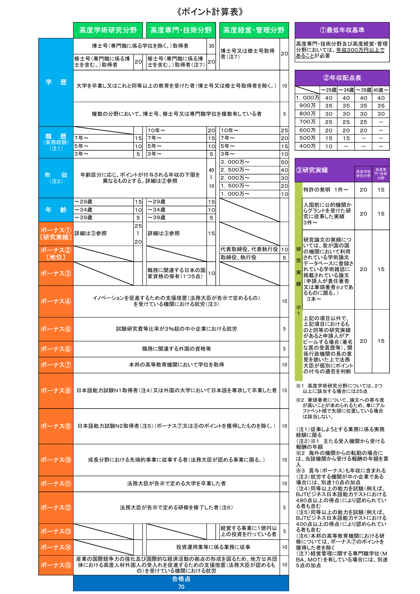
三个要点：
第一，不需要先换成高度専門職在留资格。永住ガイドライン（永住许可指南）的特例只看"按积分计算达到80/70点"，不以持有高度専門職为前提；入管为"持技人国等其他在留资格、按80/70点申请永住"者专设了必要书类清单官方，实务俗称"みなし高度専門職"（视同高度专门职）路线实务。客户持技人国攒点数、到点直接递永住，是我们方案的默认形态。
第二，80点线买到的不只是快两年，还有更短的"暴露面"。住民税被审1年还是3年、年金医保被审1年还是2年，需要保持无瑕疵记录的长度完全不同。对来日短、记录薄的客户，80点线本质是用年收换时间：年收把点数顶过80，合规历史的审查窗口缩到最短。
第三，政策风向在抬高快线价值推测：下述已定变化。2026年2月24日改订的永住ガイドライン维持两条特例不动官方，同时整体收紧：2027年4月1日起永住者在留资格取消制度施行（针对故意不缴公租公课〔税・社保费〕等；施行政令出处与标注详见11.1）官方；"持3年在留期間视同最长在留期间"的运用只延续到2027年3月31日官方；改正入管法（2026年5月29日成立）把永住手数料法定上限从1万円提至30万円，实征额拟约20万円（政令未出）媒体实务。在收紧周期里合规地缩短在留年限，正是这个产品成立的根本理由。
另一条硬边界：1年最短在留优遇只适用本人，配偶与子女不能同时取得永住官方。
核心事实：永住审查不是审一份新申请，而是对客户全部在留历史的总审查。两个时点的积分要逐项提交疎明資料；素行善良（品行）、独立生計（生计能力）、国益（含公的義務履行）等一般要件照常全套适用，见第3章官方。前述2026年2月改订还新增要件：「現に有している在留資格について、法務省令で定める上陸許可基準等に適合していること」——审查会回头核对客户现在持有的技人国本身是否名实相符官方。
因此入口阶段的水分有明确的暴露机制推测：两时点疏明＋上述新增要件。合同上虚高的年收：1年前/3年前时点的点数要用当时年度的源泉徴収票（公司开具的年度工资·扣税单）或課税証明書疏明实务，纸面工资对不上，点数当场塌掉。与技人国该当性不符的挂名职务：正面撞上上述新增要件，且政府已把"防止技人国从事无资格该当性活动"列入在留审查的运用改善事项官方；虚伪申报本身又属于在留资格的一般取消事由官方。岗位、年收、社保都是真的，这条产品线才存在；有一项是假的，问题不会消失，只会推迟到永住关口集中爆发。岗位真实性不是合规偏好，是产品能否交付的前提。
| 章 | 解决什么问题 | 什么场景用 |
|---|---|---|
| 第1章（本章） | 业务总逻辑：岗位→积分→永住 | 入职第一天；讲清我们卖什么 |
| 第2章 地基：在日生活制度 | 住民票・住民税・年金・医保・届出各是什么、对应哪张纸 | 初次面谈听懂客户、问出风险 |
| 第3章 永住許可的制度框架 | 素行・独立生計・国益三要件的法理结构 | 回答"为什么要这些材料""我能不能办" |
| 第4章 核心赛道 | 80点1年线与70点3年线：要件、两时点、转职与家属规则 | 给客户定赛道、画时间轴 |
| 第5章 积分表精讲 | 学历・职历・年收・年龄・加分项每一分怎么来、怎么证明 | 现场帮客户估分 |
| 第6章 岗位与公司的永住视角设计 | 年收设计、公司加分项、公司侧雷区与尽调清单 | 接案时审对接公司 |
| 第7章 材料清单逐项精讲 | 每份材料的取得方法、原件读法、自查表 | 签约后启动材料收集 |
| 第8章 审查实务 | 流程、时长、地区差与"蓄水池" | 递交后的预期管理 |
| 第9章 死亡清单 | Top15 不许可原因与修复时间表 | 风险告知与预期管理 |
| 第10章 客户诊断SOP | 首谈筛查问卷、赛道判定、移交规则 | 首谈后出初步判断 |
| 第11章 永住制度的变化与拿到之后 | 已定/审议中/传闻三层政策、取得后义务、帰化对比 | 客户问"以后会不会更严" |
| 附录 A–E | 术语表、材料速查、点数Worksheet、时间线、官方URL | 随手速查 |
永住审查的核心之一，是用纸面记录验证申请人是否履行了公的義務（公共义务）。永住許可に関するガイドライン（永住许可指南，令和8年2月24日改訂）原文：「公的義務（納税、公的年金及び公的医療保険の保険料の納付並びに出入国管理及び難民認定法に定める届出等の義務）を適正に履行していること」官方。本章按"它是什么→审查为什么看它→销售要问什么"三段拆解这些制度，并预告各自在第7章材料清单里以哪份纸出现。
它是什么：住民票（居民登记记录）是市区町村按《住民基本台帳法》为每位住民建立的居住记录。2012年7月9日起外国人也纳入：「中長期在留者」（持在留カード〔在留卡〕者）有住所即有住民票，「短期滞在」或在留期间3个月以下者没有官方。外国人住民票额外记载国籍・地域、在留資格・在留期間・満了日、在留カード番号等4项官方。世帯＝同一住所共同生活的单位，设一名世帯主（户主）；続柄＝与世帯主的关系（妻、子等）。
为什么审查看它：住所、世帯构成、在留资格的官方记录。永住申请要交世帯全員的住民票，入管（出入国在留管理庁）原文要求「個人番号（マイナンバー）については省略し、他の事項については省略のないものとする」官方——マイナンバー（12位个人编号）要省略，其余（続柄・世帯主・国籍・在留資格等）不能省略。而这些项目申请时默认省略，要主动勾选记载官方·自治体；最常见返工＝拿了一张全省略的住民票。
销售要问：①谁和你同一世帯？（成员状况会连带进入材料）②家人続柄登记了吗？非同籍外国人登记続柄需本国官方关系证明＋日文翻译官方。
第7章对应材料：世帯全員の住民票1通（マイナンバー省略、其余不省略）。
它是什么：住民税（居民税）＝道府県民税＋市町村民税，由均等割（定额）＋所得割（所得×约10%）构成；1月1日在日本有住所且有一定所得者，外国人同样课税官方。
时间差（必须吃透）：住民税是前年所得课当年税——N年1～12月的收入构成N+1年度的住民税，由N+1年1月1日时点的住所地自治体课税官方。三个推论：①来日第一年通常没有住民税；②年中搬家不改课税自治体，证明书回那年1月1日住所地开；③离职降薪后，当年税额仍按去年高收入算。
課税証明書 vs 納税証明書：
| 課税証明書 | 納税証明書 | |
|---|---|---|
| 证明什么 | 按收入算出了多少税（所得金額、控除〔扣除〕、税額） | 该缴的缴没缴（应缴、已缴、未纳额） |
| 一句话 | 看收入水平 | 看缴纳记录 |
收入为零或免税者开「非課税証明書」。永住申请两张都要官方·自治体。
特別徴収 vs 普通徴収：前者＝公司从工资代扣（天引き），6月～翌年5月分12期；后者＝拿自治体寄的纳付书自己缴，原则年4回官方。直近5年全期間特別徴収者免交按期缴纳证明（通帳写し・領収証書〔缴费收据〕）；有普通徴収期间（换工空档、副业等）须自证每笔按期缴官方。且ガイドライン明文：迟过当初纳付期限的，即使申请时已缴清，「原則として消極的に評価されます」官方——迟缴补上≠没事。
销售要问：①5年内换过工作吗？空档期住民税怎么缴的？②有没有自己拿纳付书缴的时期？迟过吗？③长期出国前选任納税管理人（代办纳税者）了吗官方？
第7章对应材料：課税（非課税）証明書＋納税証明書，就労系10年普通线各直近5年分；70点线（含4-(2)-イ技人国援用）直近3年分、80点线直近1年分官方。

它是什么：住民税交给自治体；国税（所得税等）的证明由税務署开。永住用その3＝未納の税額がないことの証明（无未缴税额证明）。その3不能指定年度——证明"现在没有未纳"，不是某一年的记录官方。
为什么审查看它：就労系永住要求开5个税目的その3：「源泉所得税及び復興特別所得税、申告所得税及び復興特別所得税、消費税及び地方消費税、相続税、贈与税」官方。普通工薪客户也要开全部5税目，不是只开所得税一项。取得：e-Tax（国税电子申报系统）线上、税務署窗口或邮送官方；手数料電子交付370円、書面請求400円×枚数（e-Tax FAQ官方；5税目并记枚数因税务署而异、总额留余地⚠️，详见第7章B-2）。
销售要问：①有没有副业、股票、继承赠与等需要確定申告（自行报税）的收入？申报了吗？②自营、法人代表客户：消費税缴纳拖过吗？
第7章对应材料：税務署発行・納税証明書その3（5税目）。
它是什么：公的年金两层结构——1楼国民年金（基礎年金）：20～60岁在日居住者（含外国人）全员加入；2楼厚生年金：会社員・公務員叠加，与国籍无关官方。会社員＝第2号被保険者（天引き、劳资折半）；自营・学生・无业＝第1号（自缴，2025年度月额17,510円【媒体/实务整理，参考值】）官方。
ねんきん定期便 vs ねんきんネット：定期便＝每年生日月寄来的年金记录通知：平常是ハガキ（明信片，仅直近13个月），35・45・59岁是封書（信封版，含全期間月别记录）官方。ねんきんネット＝线上服务，可打印「各月の年金記録」，用マイナンバーカード（个人编号卡，下称マイナカード）经マイナポータル（政府个人门户）登录最快官方。入管要全期間/逐月记录：封書版可用、ハガキ版不够；ねんきんネット打印件在家搞定、成本最低官方。
补缴有三种，别混：①未納（没缴也没办免除）：过纳付期限2年即时效，想缴也缴不了官方；②追納：办过免除・納付猶予・学生納付特例的期间10年内可追納，自翌年度起算第3年度以降加收加算額官方；③旧「後納制度」已终止实务。永住看直近2年按期缴纳；照2.2原则，申请前突击补缴原则上仍被消极评价官方。
销售要问：①有没有自营、留学、无业时期？那段时间国民年金缴了还是办了免除？②直近2年有没有空白月？③有マイナカード吗（决定能否在家打印记录）？
第7章对应材料：直近2年分，三选一：ねんきんネット「各月の年金記録」打印画面／ねんきん定期便（全期間版）／年金事務所「被保険者記録照会回答票」官方。
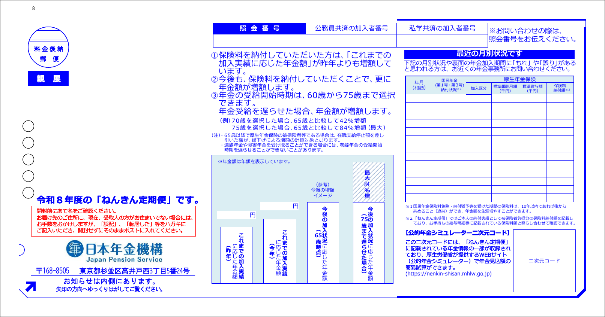
它是什么：
| 健康保険（社保） | 国民健康保険（国保） | |
|---|---|---|
| 谁加入 | 公司员工及被扶養者（受抚养家属，年收130万円未满等条件） | 不属于职场保险的人（自营、无业等），市区町村运营 |
| 保险料 | 与工资联动、劳资折半 | 按世帯人数与所得算、全额自付，无被扶養者概念 |
（表内事实官方＋实务整理）在留3个月超且无职场保险的外国人必须入国保，资格发生起14日内办；迟办追溯征收保险料官方。
为什么审查看它：保险料纳付与年金并列为公的義務。社保随工资天引き基本不出问题；国保每期自己缴，漏缴迟缴直接留痕。
销售要问：①现在社保还是国保？②直近2年有没有国保期间（离职空档、自由职业）？那段时间的領収証書还在吗？
第7章对应材料：直近2年分——社保者：被保険者証写し（マイナ保険証〔保险证并入マイナカード〕移行后可用資格確認書等代替）；国保期间者：国民健康保険料納付証明書＋領収証書写し官方。
它是什么：マイナカード是搭载IC芯片的个人编号卡，唯一兼具"颜照本人确认＋番号确认"的证件官方。コンビニ交付＝持卡＋4位暗証番号（密码），在便利店多功能终端取住民票写し、課税証明書等，6:30～23:00可用官方。多数自治体的コンビニ交付开不出含マイナンバー的住民票官方·自治体——永住恰好要省略版，正好够用。
为什么对销售重要：它不是审查项目，是取证效率开关：有卡＝住民票、課税・納税証明書在便利店搞定、年金记录在家打印；没卡＝全跑窗口，取证周期明显拉长。
销售要问：有マイナカード吗？暗証番号还记得吗？——这决定材料时间表。
它是什么：入管法对中長期在留者的两类申报义务。①住居地届出：新规入境定住所、或国内搬家后14日以内到（新）住所地市区町村办理；窗口持在留カード办転入・転居届（迁入/迁居登记）即视同完成对入管的届出；该届出不能在入管局办官方。②所属機関等に関する届出：离职、入职、公司消灭・改名・搬址等事由发生日起14日以内向入管届出（電子届出システム／窗口／邮送）；「技術・人文知識・国際業務」「高度専門職1号イ・ロ」报契約機関届出，「高度専門職1号ハ」报活動機関届出官方。
不报的后果：住居地无正当理由14日不报→20万円以下罰金，虚偽届出→1年以下懲役又は20万円以下罰金【官方FAQ・实务整理；⚠️法条编号待核实，不引条号】；退去旧住所后90日内不报新住所还构成在留資格取消事由官方。所属机关漏报有罚则，且入管原文「在留諸申請で不利になる場合もあります」官方。届出义务在ガイドライン里与税、年金并列公的義務（见本章开头引文）。
销售要问：换过工作的客户必问"当时有没有在14天内向入管报告"——客户几乎不知道这个义务，漏报是隐形减分项实务。搬过几次家？每次都按期办转入了吗？
第7章对应位置：不产生证明书（记录在入管内部），列为风险预检问题。
它是什么：出国后保住在留资格再回日本的两种通道。
| みなし再入国許可 | 再入国許可（事前申请型） | |
|---|---|---|
| 适用 | 出国后1年以内再入境 | 预计离日超1年等 |
| 手续 | 出国时在再入国EDカード（出入境记录卡）勾选 | 出国前向住居地管辖的地方入管申请 |
| 有效期 | 出国日起1年（在留期限更早则到期限止） | 在留期间范围内最长5年 |
| 海外延长 | 不可 | 可在在外公館（驻外使领馆）申请 |
| 手数料 | 免费 | 1回3,500円／数次6,500円（2025-04-01改定后；线上另有金额待核实） |
表内事实官方。みなし逾期未归的后果官方无明文，按实务一致表述＝无法以原在留资格再入国实务。
为什么审查看它：永住审查重视"以日本为生活基础"。用哪种方式出境不是问题，离日时长和频度才是——长期离日即便手续合法，也会动摇「引き続き」（连续不间断）在留的认定推测：在留要件「引き続き」表述与再入国制度逻辑，详见第3章。
销售要问：①直近几年每年离日多少天？最长一次多久？②用过事前型再入国許可吗（意味着长期离日）？③出国期间住民税・年金・国保断缴过吗？
第7章对应位置：出入国记录入管自有，无需客户开证明，但旅行史要在申请书中如实填写。
本章信源说明：条文与ガイドライン引文均出自 e-Gov 法令検索及出入国在留管理庁「永住許可に関するガイドライン（令和８年２月２４日改訂）」官方；标注实务的内容来自行政书士界公开资料，对客户只能按"实务经验值"定性，不得说成官方明文。
永住审查的法律根据只有一条：『出入国管理及び難民認定法』（入管法，日本出入境与在留管理的基本法）第22条。核心是第2項：
前項の申請があつた場合には、法務大臣は、その者が次の各号のいずれにも適合し、かつ、その者の永住が日本国の利益に合すると認めたときに限り、これを許可することができる。 一 素行が善良であること。 二 独立の生計を営むに足りる資産又は技能を有すること。
本章标题的"三要件"即由此拆出：
| 要件 | 条文位置 | 日文关键句 |
|---|---|---|
| ① 素行善良要件 | 22条2項1号 | 素行が善良であること |
| ② 独立生計要件 | 22条2項2号 | 独立の生計を営むに足りる資産又は技能を有すること |
| ③ 国益適合要件 | 22条2項柱書（正文部分） | その者の永住が日本国の利益に合する |
两个必须记住的法律性质：
官方对22条的定位值得背下来：「永住許可については、通常の在留資格の変更よりも慎重に審査する必要がある」官方——永住是入管审查里最严的一档，这决定了后面所有材料要求的颗粒度。
条文只有两句半，审查的实际标尺写在出入国在留管理庁公布的「永住許可に関するガイドライン」（永住许可指针）里。现行最新版为令和8年（2026年）2月24日改訂版官方。这份文件近年改版频繁（2024年11月、2025年10月、2026年2月均有实质变更，其中2025年10月改订把点数连续保持要件明文化，见第4章4.2），中文网络文章大多还在引旧版——对外引用要件表述前先核对版本。下面按ガイドライン结构逐条拆。
ガイドライン原文只有一句：
法律を遵守し日常生活においても住民として社会的に非難されることのない生活を営んでいること。
中文释义：遵守法律，且日常生活中作为居民不做受社会非难的事。
细化标准不在ガイドライン本体。实务界通行引用的不该当类型（源自入管内部「審査要領」的转述，非官方公开明文）实务：
销售场景三个常踩点：
| 刑罚 | 实务目安 |
|---|---|
| 拘禁刑（旧懲役・禁錮）实刑 | 刑执行完毕后约10年 |
| 执行猶予付判决 | 猶予期間满了后约5年（猶予期间内申请基本无望） |
| 罚金刑 | 缴清后约5年 |
ガイドライン原文：
日常生活において公共の負担にならず、その有する資産又は技能等から見て将来において安定した生活が見込まれること。
中文释义：不成为公共负担（典型如领取生活保護——日本的低保制度），且从其资产或技能看将来可预期稳定生活。落点在"将来预期"，不只看过去赚多少。
实务运用三个要点：
这里出现的两个材料概念详见第2章：住民税＝按上年收入由居住地市区町村征收的地方税；課税証明書 vs 納税証明書＝前者证明"课了多少税"（收入水平的官方证据），后者证明"该缴的缴没缴"。独立生計主要看前者，下面的公的義務主要看后者，两类都要（課税証明書样图见第2章2.2／第7章B-1）。
条文里只有一句"日本国の利益に合する"，ガイドライン把它细化成ア〜オ五个细目。客户翻车九成翻在这里。
原則として引き続き１０年以上本邦に在留していること。ただし、この期間のうち、就労資格（在留資格「技能実習」及び「特定技能１号」を除く。）又は居住資格をもって引き続き５年以上在留していることを要する。
中文释义：原则连续在留10年以上，其中以就労資格或居住資格连续在留5年以上；「技能実習」「特定技能1号」的在留期间被明文排除在"就労5年"之外（待核实：这两类期间能否计入"10年总在留"，官方明文未能核实，仅"就労5年排除"是原文明示）。
本手册主线的高度人材积分特例（80点→1年／70点→3年）替代的就是这条ア，而且只替代这一条——下面的イ〜オ以及素行、生計两要件照常全部适用。必须刻进脑子：点数够≠其他全免。特例本体后续章节专章拆解。
罰金刑や拘禁刑などを受けていないこと。公的義務（納税、公的年金及び公的医療保険の保険料の納付並びに出入国管理及び難民認定法に定める届出等の義務）を適正に履行していること。
公的義務是四件套（各项制度的细节见第2章）：
| # | 义务 | 一句话解释 |
|---|---|---|
| 1 | 納税 | 住民税、所得税等缴齐、缴准时 |
| 2 | 公的年金保険料納付 | 厚生年金（公司代扣）或国民年金（自己缴）；缴纳记录每年由日本年金機構以「ねんきん定期便」明信片寄给本人 |
| 3 | 公的医療保険保険料納付 | 健康保険（公司）或国民健康保険（自治体） |
| 4 | 入管法上の届出義務 | 搬家后的住居地届出、转职时的所属机关变更届出等入管法规定的申报 |
2024年11月18日改订时明文化的"杀手注释"：
※ 公的義務の履行について、申請時点において納税（納付）済みであったとしても、当初の納税（納付）期間内に履行されていない場合は、原則として消極的に評価されます。
中文释义：补缴≠合规。哪怕申请前把欠的全补上，只要不是在原定缴纳期限内缴的，原则上照样负面评价。所以筛查问题永远是"有没有迟缴过"，而不是"现在缴清了没有"。
方向性事实：令和6年（2024年）入管法改正在22条の4新设取消事由——拿到永住后故意不缴公租公課（税与社会保险料等公共负担金）、或犯一定故意犯罪，可成为在留资格取消事由官方。施行日已由令和7年政令第340号（2025-10-01官報公布）定为2027年4月1日实务，総合的対応策（2026-01-23）印证「令和9年4月施行」官方；运用ガイドライン（取消事例集）截至 last_verified 未公布（详见11.1）。信号很明确：审查对公的義務只会越来越严。
現に有している在留資格について、出入国管理及び難民認定法施行規則別表第２に規定されている最長の在留期間をもって在留していること。
中文释义：现持在留资格必须是该资格的法定最长在留期間（別表第2＝施行规则中规定各资格期間档位的附表）——技人国等多数就労资格的最长是「5年」。在留期間印在在留カード（在留卡，外国人的法定身份证件）正面，筛查第一眼先看这里。
但现行版有一个限时运用（注1）官方：
（注１）令和９年３月３１日までの間、在留期間「３年」を有する場合は、前記１(３)ウの「最長の在留期間をもって在留している」ものとして取り扱うこととする。令和９年３月３１日の時点において在留期間「３年」を有する者については、当該在留期間内に処分を受ける場合、その初回に限り前記１（３）ウの「最長の在留期間をもって在留している」ものとして取り扱う。
中文释义与实务影响：
这就是"3年签客户"的倒计时窗口，对销售节奏的影响在后续章节展开。
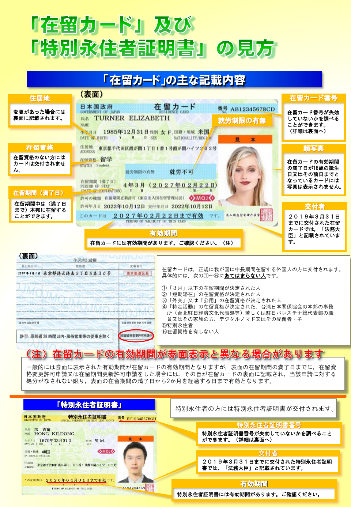
現に有している在留資格について、法務省令で定める上陸許可基準等に適合していること。
中文释义：现在实际干的活必须仍符合所持签证的上陆许可基准（申该签证时的资格条件）。典型打击对象：持技人国签证、实际在干单纯劳动的"挂名签证"。这一条是现行版新增——入管开始在永住审查时点回头核验现职的真实性。
公衆衛生上の観点から有害となるおそれがないこと。
中文释义：无公共卫生上的有害之虞。ガイドライン没有更细文言（实务上对应指定感染症等场景实务），正常客户基本不构成问题，筛查问卷保留一问即可。
| 要件（细目） | 对应材料／确认方式（代表） | 第一通电话就能问的筛查问题 |
|---|---|---|
| ① 素行善良 | 无专用证明书类，靠如实申告＋口头筛查 | 在日本受过刑事处罚吗（含罚金）？近几年交通罚单几张？ |
| ② 独立生計 | 住民税課税証明書 | 年收大概多少？扶养几人？配偶者有收入吗？ |
| ③ア 在留年限 | 在留カード＋高度専門職ポイント計算表（申请时点＋1年/3年前时点各1份） | 来日几年了？自测点数多少？ |
| ③イ 納税 | 住民税課税・納税証明書、国税納税証明書その3 | 住民税迟缴过哪怕一次吗？ |
| ③イ 年金 | ねんきん定期便等缴纳记录（直近2年分） | 年金是公司代扣还是自己缴？有没有空白月？ |
| ③イ 医療保険 | 保险料缴纳记录・領収証（直近2年分） | 国保期间有没有逾期缴纳？ |
| ③イ 届出義務 | 住民票（世帯全員）＋口头确认 | 每次搬家、换工作都向入管/役所申报了吗？ |
| ③ウ 最長在留期間 | 在留カード正面 | 现在签证是「3年」还是「5年」？何时到期？ |
| ③エ 上陸基準适合 | 口头确认职务内容与签证类型匹配 | 实际工作内容和当初申签证时一致吗？ |
| ③オ 公衆衛生 | 口头确认 | 健康状况有无特殊情况？ |
钩子：各材料的取得方法、原件长相与读法→第7章；完整客户筛查问卷与判定流程→第10章；不许可常见情形与修复时间表→第9章。
本章依据：「永住許可に関するガイドライン」（令和8年2月24日改訂）、高度人材ポイント制Q&A（令和8年4月時点）、入管官方提出书类页。实务经验值一律标实务。
第3章讲完三要件，本章进入我们业务的主赛道：高度人材积分特例。目标客户基本持技術・人文知識・国際業務（就劳类在留资格，下称技人国）或高度専門職（高度人才专用在留资格）——10年原则线等不起，但点数往往够。销售要把这两条线吃透到能给客户口头画时间轴的程度。
特例写在「永住許可に関するガイドライン」（永住许可审查指南，现行版令和8年2月24日改订）"原則10年在留に関する特例"第2（6）（7）项官方：
（６）……ポイント計算を行った場合に70点以上を有している者であって、次のいずれかに該当するもの ア 「高度人材外国人」として必要な点数を維持して3年以上継続して本邦に在留していること。 イ 永住許可申請日から3年前の時点を基準として……70点以上の点数を有していたことが認められ、3年以上継続して70点以上の点数を有し本邦に在留していること。
（７）……80点以上……ア ……1年以上継続して本邦に在留……イ 申請日から1年前の時点を基準として……80点以上……1年以上継続して80点以上の点数を有し本邦に在留していること。
| 70点3年线 | 80点1年线 | |
|---|---|---|
| 点数要求 | ポイント計算70点以上 | 80点以上 |
| 在留要求 | 继续在留3年以上 | 继续在留1年以上 |
| ア分支 | 以「高度人材外国人」身份在留者（持高度専門職或高度人材特定活動） | 同左 |
| イ分支 | 其他在留资格（技人国等）也适用 | 同左 |
| 家属同时申请 | 可设计同日申请，但家属靠"永住者配偶者/子女"年限自己够格（见4.6） | 官方明文不可（见4.6） |
两个关键定义官方：
书类负担随线别不同官方：80点线交住民税課税・納税証明書直近1年分、年金·医保纳付记录直近1年間；70点线交住民税3年分、年金·医保过去2年間（这些证明是什么→第2章2.2／2.4）。
条文结构决定点数要在两个时点分别成立：柱书"有している"＝申请时点达分；イ项"○年前の時点を基準として……有していたことが認められ"＝1年前／3年前时点也达分官方。
（N＝80点线取1，70点线取3）
──────●━━━━━━━━━━━━━━━━━━●──────→ 时间
申请日的N年前 永住許可申请日
时点①：按点数表 时点②：再算一次，
回溯计算，须≥80/70点 仍须≥80/70点
└─ 这N年间：继续在留，且按现行文言
「継続して80（70）点以上の点数を有し」─┘
操作上＝交两份ポイント計算表（入管官方自我打分表）＋各时点的疎明資料。疏明只需覆盖凑够80/70点所用的项目，不必证明表上全部项目官方。
| 点数项目 | 时点①（1年/3年前）典型证据 | 时点②（申请时）典型证据 |
|---|---|---|
| 年収 | 当年度源泉徴収票（公司年末开的年收·扣税总表）或課税証明書 | 年収見込証明書（又称収入見込証明書；公司开的未来一年预计年收证明）＋雇用契約書 |
| 学歴 | 卒業証明書·学位证明，两时点通用一份 | 同左 |
| 職歴 | 在職·退職証明書，按该时点截取年数 | 同左，年数算到申请日 |
| 年齢 | 在留卡出生日期自动认定 | 同左 |
| 日本語 | JLPT合格证书，合格日期须早于该时点 | 同左 |
（疏明方式为行政书士实务整理实务。3年前时点原则按现行点数表回溯计算；若按当时旧表能证明70点以上、附旧表及对象项目证明也可官方。）
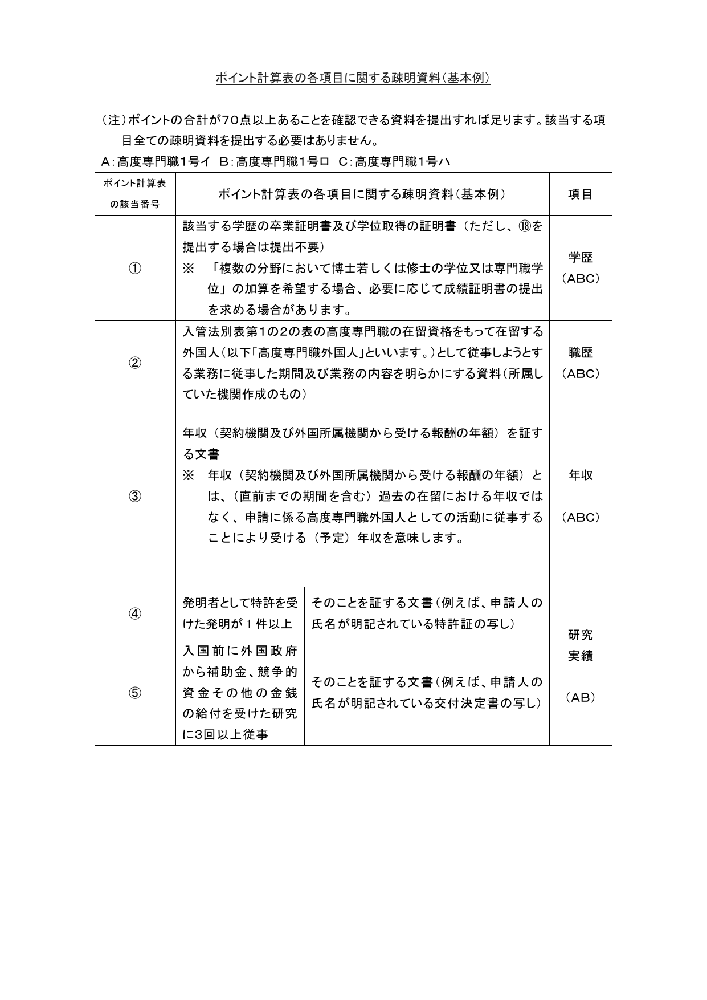
四个高频翻车点：
待核实：期间内分数能否中途跌破——现行ガイドライン文言要求"継続して……点以上の点数を有し"（全程保持），但有事务所按旧口径解说"两时点达标即可，中间跌破不碍"；2025年10月30日改订（连续保持明文化）的官方旧版存档未能直接核验。培训口径取保守线：规划上全程不掉分。
最常见的客户误解："得先变更成高度専門職，再重新等1年/3年。"错——从未持有高度専門職的技人国持有者，可以直接援用积分特例申请永住官方。依据有二：
实务俗称「みなし高度専門職」路线（"视同高度专门职"，行政书士业界叫法，非官方用语）实务。操作＝普通永住申请＋两时点计算表＋疎明資料，不需要先走一道在留资格变更。
代价是举证更重：持高度専門職者手里有入管当年认定点数的结果文件可沿用；技人国路线没有这张纸，全部点数项目要从零自行立证实务。给客户做材料预期管理时要把这个工作量讲在前面。
"引き続き／継続して在留"＝在留不中断。锚点是永住許可申请日，从申请日往回数满1年/3年；期间被认定中断的，在留年数原则清零、从头重新起算实务。
出国天数的实务目安（非法律明文，是入管当前运用，且逐年趋严）实务：
80点1年线的特殊敏感性：基数只有365天，年间出国100天＝27%以上不在日本。待核实：1年基数下入管有无比通用90/100日更严的口径——实务界没有独立目安，只能套用通用线实务。给80点线客户的行动建议：申请前一年尽量压缩出差，出入境记录先自己拉一遍核对。（出国期间的再入国許可／みなし再入国→第2章2.8。）
| 高度専門職1号 | 技人国 | |
|---|---|---|
| 转职手续 | 许可附「指定書」（把可就劳机关写死的指定文书）→转职须在留資格変更許可申請＋14日内所属机关届出官方 | 不附指定书，同范围职务转职无需变更申请；14日内所属机关变更届出义务照旧官方 |
| 隐藏风险 | 届出漏报＝公的義務不履行，永住审查直接减分（第3章3.5イ） | 同左；新职务若超出技人国活动范围，另踩"上陆基准不适合"（第3章3.5エ） |
转职后的申请时机实务：
对两时点的影响：过去年度用源泉徴収票、新雇主用見込み证明，两段拼接的年收疏明要提前设计（见4.2表）。
先把一句话说死：家属没有高度人材1年优遇。高度人材ポイント制Q&A问41（令和8年4月时点）写明，80点以上高度外国人材以1年以上在留取得永住时，最短1年的优遇只给本人，配偶者和受扶养子女不在对象内官方。所以80点1年线，销售不能说"全家一起拿"。
70点3年线能做全家的逻辑不是"70点优遇及于家属"，而是另一条：永住ガイドライン2(1)规定，永住者配偶者须有实体婚姻生活3年以上、并且继续在日1年以上；其实子等须继续在日1年以上官方。本人走70点3年时，配偶者和子女通常也已经在日约3年；本人许可成立后，家属按"永住者の配偶者等"这条独立够格。实务上可设计同日同时申请，但要按这个逻辑讲，不能讲成"家属搭了70点的车"官方实务。
这就解释了那个不对称：
80点客户的两种实务打法实务：
同时申请是"一损俱损"结构实务：家族滞在配偶者打工超周28小时上限、配偶者年收超130万円脱离社保扶养后自缴迟纳、家属交通违章，都波及主申请人；而家属打工收入却不算进世带年收——"收入不算、问题全算"。有减分项的家庭成员，可战略性后置单独申请。
客户常问"拿了2号是不是就不用永住了"。2号＝1号活动3年以上后可申请的无期限就劳资格（J-SKIP特別高度人材1年即可）官方，但和永住是两种东西：
| 维度 | 高度専門職2号 | 永住者 |
|---|---|---|
| 在留期限 | 無期限 | 無期限 |
| 活动限制 | 仍须从事高度専門職活动；无正当理由继续6个月以上不从事＝取消事由（入管法22条の4第1項6号） | 无就労限制，不工作也可 |
| 家族优遇 | 配偶者就労·親帯同·家事使用人优遇继续 | 不再以本人高度人材身份为依据实务 |
| 点数 | 取得后无定期点数审查 | 与点数无关 |
| 稳定性 | 在留仍系于"就劳" | 在留最稳定；贷款等场景实务待遇更好实务 |
给销售的判断：2号本质是"无限期工作签"，身份仍拴在工作上；永住才是与就劳脱钩。两者都以70点为底，客户凑分的努力不会白费。
点数怎么设计都到不了70点的客户，回到原则线：继续在留10年以上，其中以就労資格（技能実習、特定技能1号除外）或居住資格继续在留5年以上官方（拆解见第3章3.5ア）。日本人/永住者配偶者（婚姻3年＋在日1年）、定住者（5年）等其他特例与本手册主线客群基本无关，知道存在即可。销售动作：10年线客户转入长期名单管理，每年复核一次点数——涨薪、考下N1、读完MBA，都可能把人重新送回70点赛道。
本章信源说明：分值与定义全部出自高度専門職省令条文及出入国在留管理庁公表的ポイント計算表・Q&A（令和8年4月時点版）官方；标实务的为行政书士界通行做法；算分示例为虚构案例，标推测。
点数表的法律本体是「出入国管理及び難民認定法別表第一の二の表の高度専門職の項の下欄の基準を定める省令」（平成26年法務省令第37号，下称高度専門職省令）第1条第1項第2号——高度専門職1号分イ（学術研究类）、ロ（専門・技術就労类，技人国对应的就是它）、ハ（経営・管理类）三个分表，本手册只讲1号ロ官方。合格线70点；但先记一道前置硬门槛：省令柱書要求「契約機関及び外国所属機関から受ける報酬の年額の合計が三百万円以上」——年收不足300万円时，其他项目凑满70点也不予认定（Q&A问12同旨）官方。
开讲前三件事立住：
本章总原则：每一分都必须对应一张纸。入管公布了「ポイント計算表の各項目に関する疎明資料（基本例）」；且永住两时点审查只需提交"足以确认达到80点（70点）的项目"的资料，无需全部项目官方。所以算分方案＝材料方案：优先主张好证明的分。
| 学历 | 分值 |
|---|---|
| 博士の学位 | 30 |
| 経営管理に関する専門職学位（MBA・MOT等，含外国同等学位） | 25 |
| 修士の学位又は専門職学位 | 20 |
| 大学卒業又はこれと同等以上の教育（短大含む；高専卒・「高度専門士」も対象） | 10 |
| 複数の分野において博士・修士・専門職学位を複数保有 | ＋5 |
官方定义要点：
疏明材料：卒業証明書・学位証明書——两个时点通用同一份，是全表最好证明的分实务。
常见算分错误：①専門士当大卒算；②博士＋修士叠加；③同分野复数学位主张＋5；④看ISA简化表把MBA算成25＋20两头计。
| 実務経験 | 分值 |
|---|---|
| 10年以上 | 20 |
| 7年以上10年未満 | 15 |
| 5年以上7年未満 | 10 |
| 3年以上5年未満 | 5 |
官方定义只有一句但杀伤力大：只认「従事する業務に係る実務経験」——与申请时从事业务相关的实务经验。换过行业的客户，旧行业工龄原则上算不进来；3年未满＝0分，没有1～2年档。
疏明材料：在職証明書・退職証明書，按各时点截取年数计算实务；外文证明附日文译文（官方对提交资料的通则）官方。
常见算分错误：①不相关职历一锅算；②忘了两时点年数不同——工龄5年的客户，3年前时点只有2年＝0分，两张计算表要分别填。
对多数白领客户，学歴＋職歴＋年収＋年齢四项就决定大盘，其余是补差的小分。而年龄在这张表里有双重身份：自己给分，同时锁定年收档位的可用范围——省令原文以「当該時点における当該外国人の年齢」限定各年收档的适用官方。
| 年龄 | 分值 |
|---|---|
| 30歳未満 | 15 |
| 30歳以上35歳未満 | 10 |
| 35歳以上40歳未満 | 5 |
| 40歳以上 | 0 |
| 年収（報酬年額合計） | ～29岁 | 30～34岁 | 35～39岁 | 40岁～ |
|---|---|---|---|---|
| 1,000万円以上 | 40 | 40 | 40 | 40 |
| 900万～1,000万 | 35 | 35 | 35 | 35 |
| 800万～900万 | 30 | 30 | 30 | 30 |
| 700万～800万 | 25 | 25 | 25 | — |
| 600万～700万 | 20 | 20 | 20 | — |
| 500万～600万 | 15 | 15 | — | — |
| 400万～500万 | 10 | — | — | — |
| 300万～400万 | 0（但满足最低年収基準） | — | — | — |
| 300万円未満 | 不予认定 | 同左 | 同左 | 同左 |
官方读表三条：
年龄的疏明：护照／在留卡出生日期，自动认定实务。注意两个计算时点各按当时年龄选档。
官方定义（Q&A问7）：報酬＝「一定の役務の給付の対価として与えられる反対給付」；范围＝「契約機関及び外国所属機関から受ける報酬の年額の合計」（省令原文；ISA表注记为"主たる受入機関から受ける報酬の年額"）官方。
| 计入 | 不计入 |
|---|---|
| 基本給 | 通勤手当・扶養手当・住宅手当等实费补偿项（其中应税部分仍计入） |
| 勤勉手当・調整手当 | 超過勤務手当（加班费） |
| 賞与（ボーナス，奖金）（Q&A问8） | 其他雇主处的副业收入（计算范围仅限契約機関＋外国所属機関的反面解释） |
| 海外母公司等外国所属机关支付的报酬（转勤者，需举证；Q&A问9） | 个人炒股等投资收益（Q&A问34：株式運用利益不属于報酬） |
官方（副业一格为对省令范围条文的反面推论）
实绩还是预定？——预定。Q&A问7明文：更新时点数计算的「報酬」也按予定年収判断、过去支付的加班费不计入——这句同时是"年收＝预定年收（見込み）而非过去实绩"的官方明文依据，认定证明书交付・变更・更新均同官方。给客户报分时，用的是"今后一年合同上拿多少"，不是去年到手多少。
附带一条常被问到的：在留期间内点数跌破70（年收下降、年龄跨档）不会立即失格，但高度専門職更新时不足70点则不许可更新（Q&A问10/11）官方。
永住积分特例是两时点结构：申请时点＋1年前（80点线）／3年前（70点线）时点各做一张ポイント計算表，两个时点都要够分（ガイドライン令和8年2月24日改訂；80点线书类清单明文要求计算表2份且"80点以上のものに限る"）官方。ガイドライン文言还是「継続して…点数を有し」——形式材料看两时点，但期间明显掉点（长期失业、年收腰斩）存在被实质评价的风险【推测·依据ガイドライン文言】。
实务通行的年收疏明套路实务：
| 时点 | 年收口径 | 材料 |
|---|---|---|
| 申请时点 | 预定年收 | 雇用契約書・労働条件通知書＋公司开具的年収見込証明書 |
| 1年前／3年前时点 | 当时年度实绩 | 当时年度的源泉徴収票（或課税証明書） |
两张纸的关系（给没在日本领过工资的销售）：
待核实：永住两时点审查中，申请时点的年收是否与高度専門職审查完全一样按预定年收认定，官方必要书类页未明文；实务上見込証明＋直近源泉徴収票双轨准备实务。
随手记两条配套事实：80点线的住民税证明只要直近1年分（70点线3年分；年金・医保为1年間／2年間），年限矩阵见第7章官方。另外，80点1年最短永住只适用本人，配偶者・子女不享受该优遇、不能凭1年同时永住（Q&A问41）官方——家庭客户的预期要提前管理。
省令原文：「次のイからニまでのうち一以上に該当すること…十五」——该当一项是15点，该当三项还是15点；2项以上25点是1号イ（学術研究类）专用，1号ロ没有官方。
| 该当类型 | 内容 |
|---|---|
| イ 特許 | 作为発明者获得专利的发明1件以上 |
| ロ 外国政府资金研究 | 受外国政府補助金・競争的資金等的研究，従事3回以上 |
| ハ 学術論文 | 日本国家机关使用的学术论文数据库登载的学术杂志上的论文3本以上 |
| ニ 个别认定 | 同等研究实绩（著名奖项受奖历等）由法務大臣听取相关行政机关意见后个别认定；走此项的申请不适用入国・在留优先处理（Q&A问3注） |
官方论文项两个硬条件：
常见算分错误：①挂名合著就主张15点；②以为多项该当能拿25点（那是1号イ）；③拿不在收录范围的杂志、会议论文凑3本。
| 该当状况 | 分值 |
|---|---|
| 对象资格・试验合计2项以上该当（可跨类） | 10 |
| 仅1项该当 | 5 |
对象范围三类，均限従事する業務に関連する官方：
疏明材料：按官方「疎明資料（基本例）」对应项执行（见本章开头图2）。
常见算分错误：①民间资格・检定不在对象内（只有国家资格＋IT告示所定者）；②与现职业务无关联的资格不加分；③上限10点，考四个证也不会变20。
| ISA表编号 | 内容 | 分值 |
|---|---|---|
| ④ | イノベーション促進支援措置对象机关就劳 | 10（该机关为中小企業时合计20） |
| ⑤ | 試験研究費等比率＞3%的中小企業就劳 | 5 |
| ⑥ | 職務関連的外国资格・表彰等（法務大臣个别认定） | 5 |
| ⑦ | 本邦高等教育机关学位（日本国内大学／大学院毕业） | 10 |
| ⑧ | 日本語能力試験N1合格，或外国大学日语专业毕业 | 15 |
| ⑨ | 日本語能力試験N2合格 | 10 |
| ⑩ | 成長分野先端事业従事 | 10 |
| ⑪ | 法務大臣告示大学毕业 | 10 |
| ⑫ | 法務大臣告示研修修了 | 5 |
| ⑭ | 投資運用業等业务従事 | 10 |
| ⑮ | 受认定地方公共団体支援措置的机关就劳 | 10 |
官方不适用1号ロ的项：②地位（代表取締役10／取締役5）与⑬（経営事业1億円以上投资5）是1号ハ（経営・管理类）专用；①研究实绩2项以上25点是1号イ专用官方。客户自算虚高，常见来源之一就是把这些别类专用项算到自己头上【推测·依据分类结构】。
⑪的依据是告示578号第2条（最終改正：令和8年3月31日告示第28号），三类对象官方：
| 类型 | 内容 |
|---|---|
| Ⅰ 排名校 | QS・THE・ARWU（上海软科）三大世界大学排名中2个以上进前300位的外国大学；日本大学任一排名上榜即可 |
| Ⅱ | 文科省スーパーグローバル大学創成支援事業（トップ型・グローバル化牽引型）对象校 |
| Ⅲ | 外務省イノベーティブ・アジア事業パートナー校 |
规则：Ⅰ／Ⅱ／Ⅲ之间不可重复加算；但⑪可与⑦叠加（Q&A问18）——东大等日本上榜大学毕业＝⑦10＋⑪10＝20点官方。现行名单为「加点対象となる大学一覧」令和8年1月時点版，名单自注申请时须另行确认最新排名官方。
⑫＝告示研修（イノベーティブ・アジア事业一环、JICA本邦实施、研修期间1年以上）修了5点，与⑦重复时不可加算（Q&A问19）官方。
常见算分错误：①外国大学只在一个排名进前300就主张⑪（外国大学须2个排名以上，"任一上榜即可"只适用于日本大学）；②用旧名单旧排名；③Ⅰ＋Ⅱ叠加成20。
这五项的分值长在"公司／业务"上，不长在客户身上官方：④イノベ促進支援措置对象机关（中小企業合计20；中小企業基本法第2条第1項定义、Q&A问13）；⑤試験研究費等比率＞3%的中小企業（看前事業年度实绩、Q&A问14）；⑩成長分野先端事业（IoT・再生医療等，法務大臣认定，现行一览令和8年3月現在版）；⑭投資運用業等（金商法28条的第二種金融商品取引業・投資助言代理業・投資運用業；告示578号第4条）；⑮受认定地方公共団体支援措置的机关（现行：東京都・広島県・福岡県／福岡市・北九州市等，一览令和7年10月現在版）。
销售动作只有一个：拿客户公司名对照现行官方名单——对得上＝+10～20点，跳槽即清零。公司侧尽调与岗位设计详见第6章6.2／6.3。常见错误：凭"我们公司是大手"的体感主张加点，名单制项目没有体感分。
以下人物纯属虚构，分值依据上述官方点数表演算【推测·示例】。
| 项目 | 该当 | 点数 |
|---|---|---|
| 学歴 | 修士 | 20 |
| 職歴 | 3年以上5年未満 | 5 |
| 年収 | 520万円@28岁（500万～600万档） | 15 |
| 年齢 | 30歳未満 | 15 |
| ⑦本邦学位 | 日本大学院毕业 | 10 |
| ⑧日本語 | N1 | 15 |
| 合计 | 80 |
申请时点漂亮踩到80。但两时点一算就破功：1年前27岁、職歴2年（3年未满＝0分）、年收470万（10点）→ 20＋0＋10＋15＋10＋15＝70点。80点线两时点不齐；70点·3年线要看3年前——还在读研、没有契约机关报酬，连300万最低年収基準都过不了，该时点不成立。结论：从首次到达80点之日起再满1年才能动，期间年收别掉档、別轻易转职。"今天80点"≠"今天能申请"，这笔时点账就是销售的核心技能。
| 项目 | 该当 | 点数 |
|---|---|---|
| 学歴 | 大卒 | 10 |
| 職歴 | 7年以上10年未満 | 15 |
| 年収 | 720万円@33岁（700万～800万档） | 25 |
| 年齢 | 30～34岁 | 10 |
| ⑪告示大学 | 两排名前300 | 10 |
| ⑨日本語 | N2（无⑦⑧，可加） | 10 |
| 合计 | 80 |
1年前：32岁、職歴7年（仍15）、年收710万（仍25）→ 同构成仍是80。两时点均达标，80点·1年线成立，立刻锁时点推进。风险提示：35岁生日年齢-5且年收档收紧——这类"刚好80"的客户，拖一个生日就掉赛道。
| 项目 | 该当 | 点数 |
|---|---|---|
| 学歴 | 修士 | 20 |
| 職歴 | 10年以上 | 20 |
| 年収 | 650万円@38岁（600万～700万档） | 20 |
| 年齢 | 35～39岁 | 5 |
| ⑨日本語 | N2 | 10 |
| 合计 | 75 |
75点：70线达标、80线差5分。3年前时点：35岁、職歴8年（15）、年收620万（20）→ 20＋15＋20＋5＋10＝70，刚好踩线（前提：N2合格日期早于3年前时点）。给客户摆两个方案：①按70点·3年线推进；②补5分上80线——考N1（⑧15替换⑨10，净+5）或年收谈进800万档（+10）；转职去名单内机关也能加10，但转职后立即申请有稳定性观点的不许可风险，实务建议转职后约1年再动实务。70线已通时，80线的补分动作交给第6章的岗位设计去做。
【推测·依据官方分值表的组合演算；个案以两时点Excel实算为准】
80点常见组合：
| 客户画像 | 构成 | 合计 |
|---|---|---|
| 日本修士·入职3年目 | 修士20＋⑦10＋N1 15＋年齢（～29）15＋年収500万台15＋職歴3年5 | 80 |
| 海外名校·30代前半工程师 | 大卒10＋⑪10＋N2 10＋年齢10＋年収700万台25＋職歴7年15 | 80 |
| 高年收硬刚型（无日语分） | 修士20＋職歴7年15＋年収900万台35＋年齢（30～34）10 | 80 |
| 40代资深管理职 | 大卒10＋職歴10年20＋年収1,000万以上40＋年齢0＋N2 10 | 80 |
70点常见组合：
| 客户画像 | 构成 | 合计 |
|---|---|---|
| 日本修士·入职1～2年目 | 修士20＋⑦10＋N1 15＋年齢（～29）15＋年収400万台10 | 70 |
| 30代前半中坚 | 修士20＋職歴5年10＋年収500万台15＋年齢10＋N2 10＋資格1项5 | 70 |
| 30代后半老资历 | 大卒10＋職歴10年20＋年収600万台20＋年齢5＋N2 10＋資格1项5 | 70 |
用法提醒：组合表只用于第一通电话的快速预判。报方案前必须做两时点的Excel实算，并逐项问一句"这分有纸吗"——年收的見込証明开得出来吗、N1合格日期够早吗、職歴证明前公司愿意开吗。年收与公司侧加分怎么设计上档→第6章；两时点之外的全套材料（住民税・年金・医保的年限矩阵）→第7章。
前几章看的是客户自身条件，本章把镜头转向公司。在 80 点→1 年 / 70 点→3 年两条赛道上，点数表里弹性最大的年收项、一组取决于雇主属性的加分项、以及国益適合要件（永住审查的总括要件，含纳税·年金·保险·届出等公的义务的履行，详见第3章3.5）里最致命的年金·住民税记录，全都系在公司侧。接案首谈就要对公司做一轮尽调——本章最后落成检查表（6.2.4）。
年收是点数表里唯一每年变动、又能通过谈薪与跳槽主动设计的大分值项，最高 40 点。完整年収×年齢矩阵与读表规则见第5章5.3.1，岗位设计要点三条：
倒推示例：32 岁修士、N1、日本国内大学院毕业＝修士 20＋年龄 10＋N1 15＋本邦学位 10＝55 点：70 点 3 年线年收 500 万档（+15）即够；其他项不变切 80 点 1 年线须 700 万档（+25）。门槛差 200 万、赛道差两年——配合第5章矩阵使用。
积分特例是两时点结构：申请时点＋1 年前（80 点）/3 年前（70 点）时点都要够分官方，年收疏明口径不同实务：
| 时点 | 口径 | 典型材料 |
|---|---|---|
| 申请时点 | 見込年収（预定年收） | 雇用契約書·労働条件通知書（公司明示工资条件的书面文件）＋公司开的年収見込証明書 |
| 1年/3年前时点 | 实绩 | 当年度源泉徴収票（公司年末发的年收·已扣所得税汇总单）·課税証明書（与納税証明書的区别见第2章） |
坑在入职第一年实务：課税証明書按上年实际所得开，数字只覆盖不满一年收入、与見込年収对不上，须附給与明細（工资明细）做年额换算说明。转职后立刻申请还会因收入稳定性被消极评价，实务建议约 1 年后再申请实务。销售动作：先确认人事愿开「年収見込証明書」，并拿到雇用契約書的工资构成条款。
① 年金链（国益要件死穴）。 公司正常加厚生年金（公司员工的公的年金，公司从工资代扣缴付）的，记录自动完整实务；不加的，客户须自办国民年金（个人自缴的基础年金）按期自缴，漏办迟缴都留痕。审查看"是否在法定纳期限内缴付"：迟一天也算迟纳，税·年金·保险是实务公认的不许可原因 No.1，迟纳补缴后还要再积约 1 年守期实绩，且年金追纳只能回溯 2 年（受免除·猶予者 10 年）、超期补缴在入管自查表中与未纳同列实务。公司社保不规范，最终全落到客户的国益要件上【推测：由上述口径组合推论】。
② 住民税链。 特別徴収（公司代扣住民税）基本无险；普通徴収（自己缴付）须保存納付領収証書，审查官逐期核对纳期限与实缴日实务。不办特別徴収＝把合规压力转嫁给客户自律。
③ 年收·点数链。 经营恶化→降薪·賞与缩水→年收掉档：高度専門職更新时不足 70 点不许可更新官方；积分特例申请时点不够分则赛道延后；两时点之间跌破是否影响，现行ガイドライン文言从严要求期间连续保持点数官方，按4.2保守口径一律以全程不掉分规划。
记录回溯窗官方：80 点线＝住民税課税·納税証明書直近 1 年分＋年金·医保直近 1 年間；70 点线＝3 年分＋2 年間（材料矩阵见第7章）。有实务按直近 2 年备年金记录，从严更稳实务。
| 加分项 | 内容 | 分值 |
|---|---|---|
| ④ | 就职于イノベーション促進支援措置对象机关 | 10（中小企業合计20） |
| ⑤ | 就职于試験研究費等比率超3%的中小企業 | 5 |
| ⑩ | 从事成長分野先端的事業（IoT·再生医療等） | 10 |
| ⑭ | 从事投資運用業等金融业务 | 10 |
| ⑮ | 就职于受认定地方公共団体支援措置的机关（含東京都·広島県·福岡県/市等） | 10 |
换到对象机关点数立刻 +10～20；把公司名、业务对照官方现行名单核对（名单会更新，以申请时现行版为准）。
底层调研（R2/R3/R6）对以下四项无任何信源，补齐前销售不得对客户给口径，全部 待核实：入管カテゴリー（1～4类，按公司性质划分材料档次的入管分类）对永住材料·审查的影响；決算赤字是否直接影响在留更新（现阶段只能讲 6.2.1③ 的间接链）；公司自身税务滞纳是否波及员工申请；办公实体（注册地与实际办公场所）的审查影响。
公司规模×年收合理性推测：課税証明書与源泉徴収票金额不一致是資料提出通知書（审查中的追加资料通知）的典型追问项实务，年收又靠公司开的見込証明立证——小公司开与规模失衡的高薪，疏明负担可预期上升。无直接信源，仅作风险提示。
首谈过一遍，红灯项先于点数计算处理：
| # | 检查项 | 怎么查/问什么 | 红灯信号 |
|---|---|---|---|
| 1 | 厚生年金加入 | 工资明细有无「厚生年金保険料」扣缴栏；ねんきんネット（年金機構在线记录系统）打印各月记录官方 | 无扣缴栏；空白月 |
| 2 | 年金记录完整性 | ねんきん定期便（年金機構寄送的记录通知；永住用须全期間表示版、再交付约2个月）官方 | 转职空白期漏办国民年金实务 |
| 3 | 住民税徴収方式 | 公司代扣（特別徴収）还是自缴（普通徴収）？ | 普通徴収且領収証書未存实务 |
| 4 | 海外扶养申报 | 报税挂几名母国亲属？有无送金记录？ | 扶养压低课税所得；无送金记录须修正申告（向税务署追溯更正报税并补税）实务 |
| 5 | 年收构成 | 雇用契約書：基本给+固定残业+确定賞与够档否实务 | 变动加班费、未定奖金凑数 |
| 6 | 年収見込証明書 | 人事愿否开具（入职首年必需）实务 | 不配合 |
| 7 | 加分属性 | 按6.2.2对照官方名单官方 | —（命中＝加分） |
| 8 | 所属機関届出 | 历次转职14日内届出了吗官方 | 漏报（已有不许可案例实务） |
| 9 | 指定書（高度専門職者） | 指定書绑定机关＝现雇主？官方 | 转职未办资格变更 |
| 10 | 決算/降薪动向 | 近期有无降薪·賞与缩水计划（见6.2.1③） | 已发生或预告 |
| 11 | カテゴリー/办公实体 | 待核实 | — |
高度専門職1号ロ的取得要件＝点数 70 点以上＋技人国相当的就労該当性官方，点数叠在"职务内容与学历·职历相关联"这块技人国地基上（技人国的定义见第1章1.1）——工作内容脱离学历/职历延长线，地基先塌。三个连接点：職歴加点只认与"在日本从事的工作相同"的实务经验，打工·兼职不算实务；資格加点只认与业务相关的国家资格/IT 资格官方；历次更新·变更申请的职历·岗位描述在入管档案里可全部比对，前后矛盾是自爆实务。销售动作：岗位实质调动（如开发转销售）时标记关联性风险、转行政书士判断，销售不下专业结论。
倒闭/失业：收入归零→独立生計要件可能瞬间崩塌实务；技人国等一般就劳资格，无正当理由继续 3 个月不从事该当活动即构成在留资格取消事由（入管法22条の4；高度専門職2号放宽至 6 个月）官方——找下家的时间窗比客户以为的紧。已递交永住申请的，还触发了解書（申请时签的承诺书：退職·転職·就職等变动须主动向入管申告，瞒报最坏可致许可取消）申告义务实务。
转职：①所属機関·住居地变更各 14 日内届出官方；②空白月自办国民年金实务；③高度専門職1号指定書绑定机关，转职须办在留资格变更官方；④转职后等 6 个月～1 年再申请（高度専門職·高年收·博士例外较快）实务；⑤审查中转职原则负面，除非年收 +100 万以上升职实务。
公司社保滞纳/被入管关注：对普通员工申请的影响 待核实（无直接信源）。落地两点：経営者·会社代表客户，公司的健康保険·厚生年金保険料領収証書（或社会保険料納入証明書）本身就是其申请材料官方，公司缴付状况是直接死穴；普通员工则定期用ねんきんネット逐月核对厚生年金入账【推测：由官方接受的记录证明形式反推的自查手段】。
本章一句话：客户的永住赛道一半握在公司手里。6.2.4 检查表首谈必过，伤害链亮红灯优先于点数计算处理；⚠️ 项补齐前不得对客户输出。
本章用法：全手册份量最重的一章。客户问"到底要交什么"，答案全在这里。每份材料按固定五栏拆解：① 是什么 ② 长什么样 ③ 在哪取得/费用/有效期 ④ 审查官看什么 ⑤ 常见错误。先通读一遍，再把 7.6 的"取证跑腿路线图"打出来贴在工位上。制度概念（住民税为什么滞后一年、特別徴収是什么等）的底层逻辑见第2章，本章只讲"这张纸怎么来、怎么交"。
高度人材积分特例下共四种情景，对应入管官网四张不同的材料清单页（均 2026-06-12 访问，官方）：
| 情景 | 申请时在留资格 | 点数线 | 官方清单页（moj.go.jp/isa/applications/procedures/） |
|---|---|---|---|
| A | 高度専門職（或特定活動） | 80点・1年 | nyuukokukanri07_00130.html |
| B | 技術・人文知識・国際業務等 | 80点・1年（援用特例） | nyuukokukanri07_00132.html |
| C | 高度専門職（或特定活動） | 70点・3年 | nyuukokukanri07_00133.html |
| D | 技術・人文知識・国際業務等 | 70点・3年（援用特例） | nyuukokukanri07_00134.html |
技人国（技術・人文知識・国際業務，下同）客户走 B/D 时，基础书类引自「永住許可申請３」（就労資格用）母清单，再叠加积分特例追加项；其中税与年金的年限要求被特例年限取代【官方页面结构＋实务解读】。
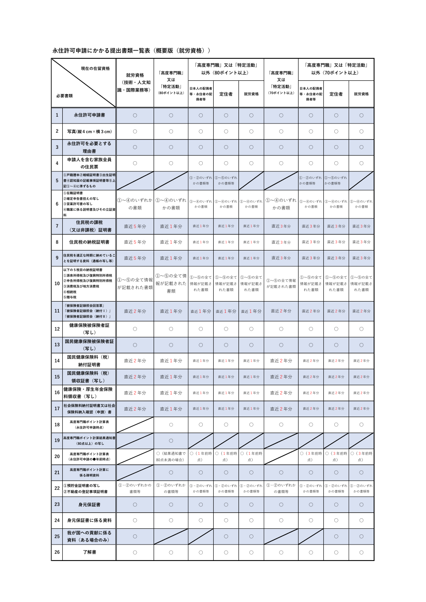
全章最重要的一张表——立证年限对照官方：
| 立证项目 | 80点线（A/B） | 70点线（C/D） | 对比：10年普通路线 |
|---|---|---|---|
| 住民税課税証明書＋納税証明書 | 直近1年分 各1通 | 直近3年分 各1通 | 直近5年分 |
| 公的年金纳付记录 | 直近1年間 | 直近2年間 | 直近2年間 |
| 公的医療保険纳付证明 | 直近1年間 | 直近2年間 | 直近2年間 |
| 国税納税証明書（その3） | 5税目（その3不分年度） | 同左 | 同左 |
| ポイント計算表 | A：申請時点1通 ／ B：申請時点＋1年前時点 2通 | C：申請時点1通 ／ D：申請時点＋3年前時点 2通 | 不适用 |
六条共通规则（官方各清单页注记，官方）：
时间策略：官方標準処理期間「4〜6か月」，但实务实测东京 2025年3月时点约 1年6〜7个月实务。结合 3か月有效期，所有证明书应在递交前 2〜4 周集中取得，不要提前几个月备齐【推测：依据＝3か月有效期规则＋审查长期化后入管常在中途追加索要最新年度证明】。
① 是什么：永住申请的正式申请表，官方様式名「別記第三十四号様式」，1通。
② 长什么样：
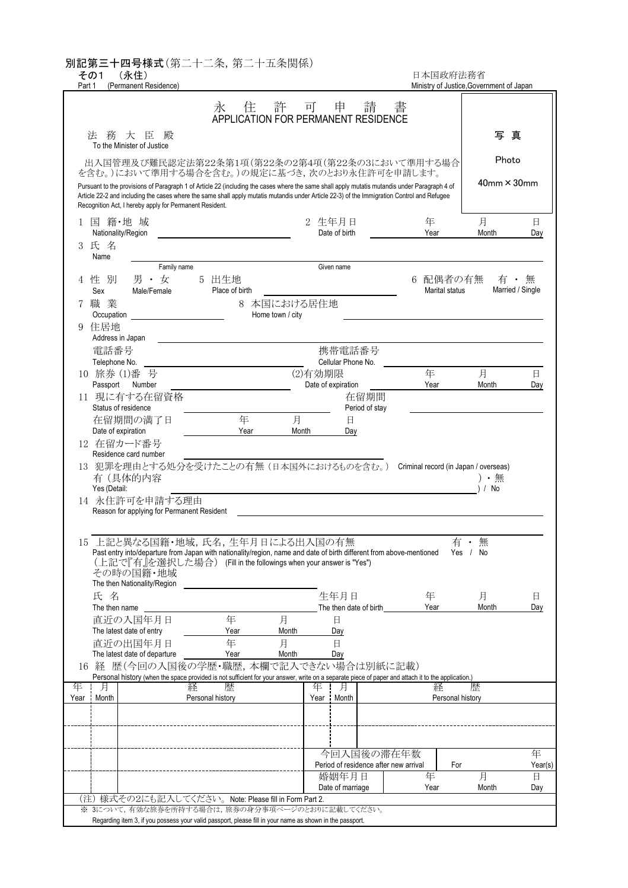
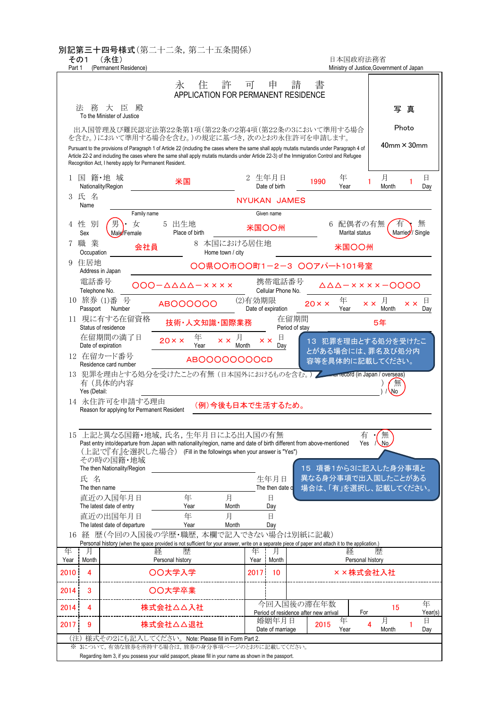
③ 取得/费用/有效期：官网免费下载（PDF 930002835.pdf／Excel 930002836.xls）；无有效期，按提交时点实情填写。
④ 审查官看什么：与历次在留申请档案的一致性——职历、住所、家族构成，入管内部全部可比对实务；与本次添付书类（住民票、在職証明書等）的相互一致。
⑤ 常见错误：凭记忆填职历/住所，与过去更新申请的版本对不上——"与过去申请内容矛盾"是实务公认的不许可原因实务。填写前先让客户把历次申请留底翻出来。
① 是什么：申请用证件照，贴于申請書，1葉；16歳未満免除官方。
② 长什么样：縦4cm×横3cm 的标准证件照（无官方样图；规格段见官方各清单页，URL 见附录 E「必要书类页」）。
③ 取得/费用/有效期：证明写真机/照相馆即拍；官方清单页仅载尺寸与年龄免除，是否要求"3个月内近照"待核实。
④ 审查官看什么：与在留カード・护照为同一人。
⑤ 常见错误：尺寸不符（只接受 4cm×3cm）、漏贴。
① 是什么：说明"为什么申请永住"的文书，1通；官方注记形式自由、外语书写须附译文官方。实务定位：审查官的第一阅读文书，承担申请动机＋纳税年金履历完整性＋积分构成的总说服功能实务。
② 长什么样：无固定样式——官方无理由書模板，清单页原文「自由な形式で書いて下さい」官方。实务推荐五段构成：自我介绍→来日经纬→工作状况→生活状况（居住年数・年收・纳税）→申请理由与今后实务。（注意：素材包内 eiju_riyusho_sanko_yoshiki.docx 是「自ら出頭することができない場合用」理由書様式——本人无法出头时的程序性文书，与申请动机理由書无关，不得发给客户当模板。）
③ 取得/费用/有效期：自行撰写。长度目安两派：1,000〜2,500字／A4 2〜3枚（2,000〜4,000字）实务；共识是太短＝信息不足、太长＝读不下去。PC 打印优于手写实务。
④ 审查官看什么：核心只有一个问题——"为什么是永住、为什么是日本"实务；以及自述内容与历次申请档案、添付书类的整合性。
⑤ 常见错误（地雷）：a) 与历次申请矛盾＝自爆实务；b) 迟纳辩解——迟纳 1〜2 次可附理由说明，频繁迟纳写再多理由也救不回实绩实务；c) 模板腔、代笔腔，不用申请人自己的话写实务。实务共识："只因理由书质量低而不许可最冤"——它是少数完全可控的变量实务。
① 是什么：申请人签署的承诺书：审查期间发生重要变动（退職・転職・就職、結婚・離婚・同居・別居、税金社保纳付状况变化、刑罚确定等）时主动及时向入管申告实务；各清单页要求 1通官方。
② 长什么样：
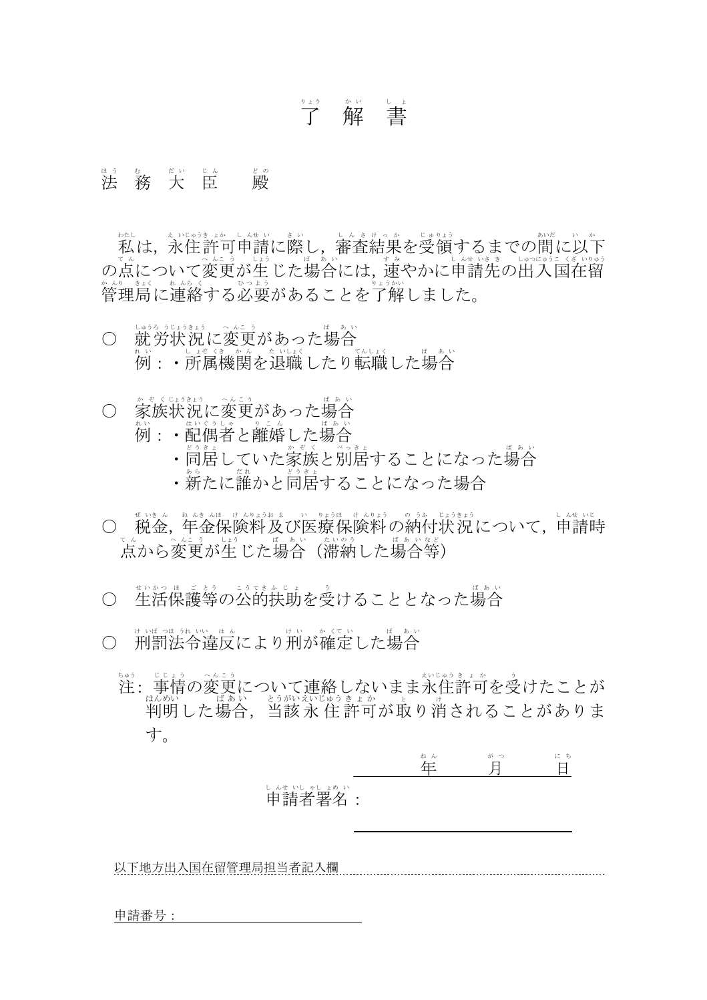
③ 取得/费用/有效期：官网免费下载，共13语言版，含中国語簡体字版（001356127.pdf）——给客户讲解条款时可用中文版对照官方。
④ 审查官看什么：签署本身＋此后是否践约。审查动辄一年以上，期间转职、离婚、漏缴都触发申告义务。
⑤ 常见错误：当成"签个名的格式件"，不给客户讲内容；审查中转职不报，最坏可导致许可取消实务。2021年10月1日起永住申请须提交了解書（官方清单页〔永住許可申請3〕注记官方）。
这一组是不许可第一重灾区——税金・年金・保险是实务公认的"不許可理由 No.1"实务。材料本身不难取，难在记录是否干净。
① 是什么：两张不同的纸——課税証明書看收入水平（收入为零/免税者开非課税証明書），納税証明書看缴纳记录，两张都要【官方·自治体／实务】（两证区别与住民税时间差的底层逻辑见第2章2.2）。
② 长什么样：
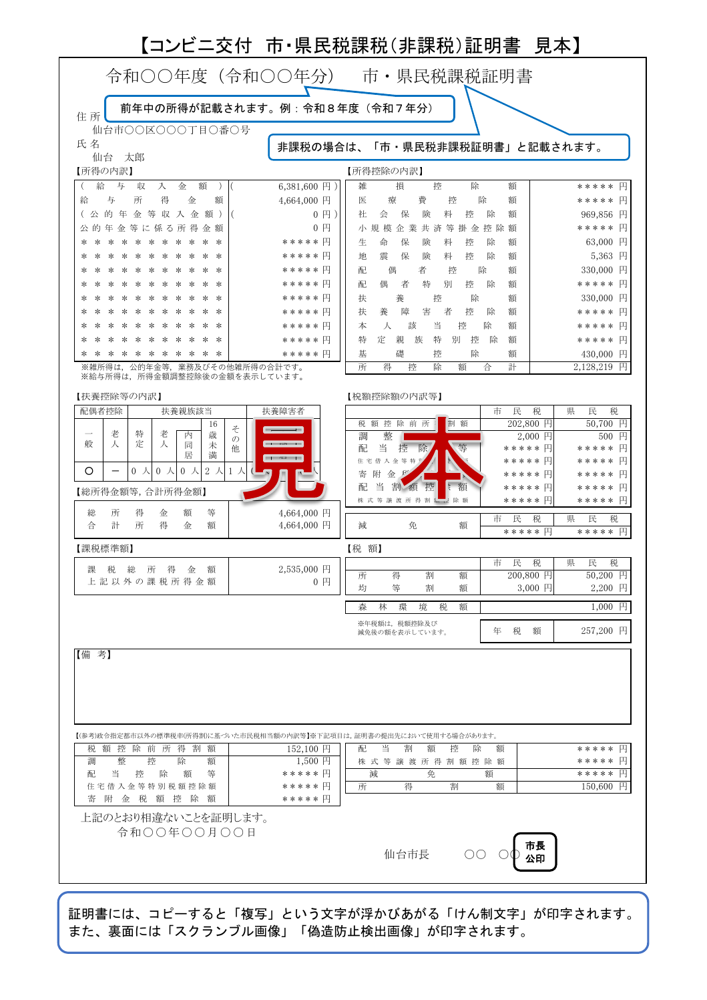
③ 取得/费用/有效期：到对象年度1月1日时点住民登录地的市区町村开（窗口/邮送；持マイナンバーカード多数自治体可コンビニ交付）。费用自治体各异：窗口通常 300円/通 前后；コンビニ交付例：江東区200円、札幌250円、相模原250円官方·自治体。有效期 3か月。年限：80点线直近1年分、70点线直近3年分，各1通官方。
④ 审查官看什么：a) 总所得——独立生计与点数表年收申报的对照；b) 扶养人数——国外扶养控除虚报是中国籍申请人重灾区，扶养栏与送金实态不符会触发追加资料通知，不当扶养须先修正申告再申请实务；c) 纳期限内是否缴清——証明書须同时载"1年間総所得"与"納期到来分的纳付状况"；d) 与源泉徴収票（定义见5.3.3）金额的一致性（副业未申告在这一步暴露）实务。
⑤ 常见错误：a) 两种记载分属两张时只开了一张；b) 年中搬过家去现居自治体开——开不出来，要回那年1月1日住所地；c) 普通徴収期间只有納税証明書不够，还要領収証書/通帳写し证明按期缴纳，全期間特別徴収（公司代扣）者免此项官方；d) 便利店现金缴税后弄丢领收书——可与役所协商补开按期纳付证明，各自治体处理不一实务；e) 以为补缴完就没事——"申请时已缴清但当初纳期限内未缴"原则上仍被消极评价【官方ガイドライン】。
① 是什么：税務署开的"现在没有未缴国税"证明（その3不指定年度，制度见第2章2.3）。永住申请要求 5税目全部：源泉所得税及び復興特別所得税／申告所得税及び復興特別所得税／消費税及び地方消費税／相続税／贈与税官方。
② 长什么样：
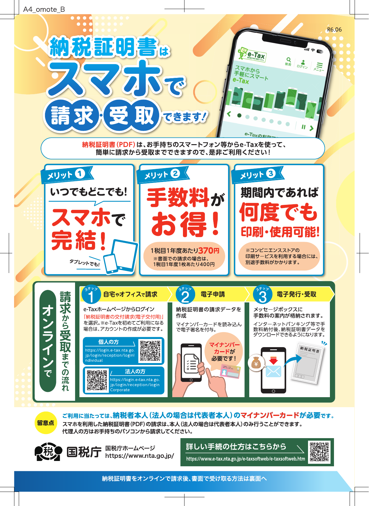
③ 取得/费用/有效期：住所地管辖税務署窗口/邮送，或 e-Tax 在线请求（电子交付 370円；书面请求 400円×枚数）官方。5税目是否并记1枚因税务署实务而异，总费用按"数百円〜2,000円程度"留余地待核实。有效期 3か月。国税庁名古屋局有专页「税務署に行かずに申請できます！永住許可申請のための納税証明書」，可直接转给客户官方。
④ 审查官看什么：5税目下有无未纳额。工薪族没申报过的税目（消費税、相続税等）也会以"无未纳"形式出证，照常能开。
⑤ 常见错误：a) 只开"所得税"一项——5税目缺一即不齐；b) 跑去公司所在地税务署——管辖按住所地；c) 把住民税納税証明書当成本项（地方税≠国税）。
① 是什么：证明对象期间（80点线直近1年間、70点线直近2年間）每个月的年金都在纳期限内缴付官方。会社员走厚生年金（公司代扣），自营/无业/空窗期走国民年金（自缴），多制度加入者按各制度分别立证官方。制度两层结构见第2章。
② 长什么样：
③ 取得/费用/有效期——四种官方可接受形式官方：
| 形式 | 在哪取得 | 备注 |
|---|---|---|
| 被保険者記録照会回答票（含納付Ⅰ・Ⅱ） | 年金事務所窗口 | 实务通说免费，⚠️官方未明示手数料 |
| ねんきん定期便（全期間版・封書） | 35/45/59岁自动寄送；再交付电话 0570-058-555 | 再交付约2か月，赶时间别等它 |
| ねんきんネット「各月の年金記録」打印画面 | 在家打印（マイナポータル連携或ユーザID登录），免费 | 最低成本路径；有国民年金期间者另附「国民年金の年金記録（各月の納付状況）」画面 |
| 国民年金保険料領収証書写し | 客户自存 | 对象期间全部（80点12个月/70点24个月），证明无期限后纳付 |
经营者另需：事业主期间的健康保険・厚生年金保険料領収証書写し全部，或日本年金機構「社会保険料納入証明書」／「納入確認（申請）書」官方。
④ 审查官看什么：逐月比对"纳付日 vs 纳期限"。实务口径"迟一天也算迟纳"，过去哪怕一次超期，原则上消极评价实务。
⑤ 常见错误：a) 拿平常年份的ハガキ版定期便交差（只有13个月）；b) 转职空窗月忘了自办国民年金加入手续，空窗月变成未纳记录实务；c) 突击补缴后立刻申请——实务目安是缴清后再积累约1年按期实绩实务，且未纳超过2年时效后已无法补缴官方；d) 忘记黑涂基礎年金番号（共通规则4）。
① 是什么：证明对象期间（80点1年間/70点2年間）健康保险无漏缴官方。在职者＝健康保険（职场社保，劳资折半）；其他＝国民健康保険（国保，市区町村运营，自缴）——两段经历的客户两段都要证。
② 长什么样：无样图。社保在职者过去交"被保険者証写し"；2024年12月2日マイナ保険証移行后：持マイナ保険証（用マイナンバーカード当保险证）者改交マイナポータル「資格取得年月日」确认画面写し（3か月以内输出），未持有者交「資格確認証」写し官方。参考：厚労省 mhlw.go.jp/stf/newpage_08277.html。
③ 取得/费用/有效期：社保族在家输出マイナポータル画面（免费）。国保族到市区町村开「国民健康保険料（税）納付証明書」（约300円/通，可开含当年度的过去5年度分；名称带"（税）"是因为部分自治体按保险税征收）官方·自治体，并附对象期间領収証書写し全部。经营者同 B-3 经营者项。
④ 审查官看什么：对象期间每一段都有加入记录且按期缴纳；70点线（情景C）官方页面明记被保険者証写し为世帯全員分——配偶者的保险状态一并看官方。
⑤ 常见错误：a) 国保期间只交保险证复印件，漏納付証明書＋領収証書；b) 配偶者年收超130万脱离社保扶养后忘了自缴，连带主申请人失分实务；c) 忘记黑涂保険者番号・被保険者記号番号。
① 是什么：市区町村的居住登录记录（制度与世帯概念见第2章2.1），永住申请要交世帯全员记载的住民票 1通官方。
② 长什么样：
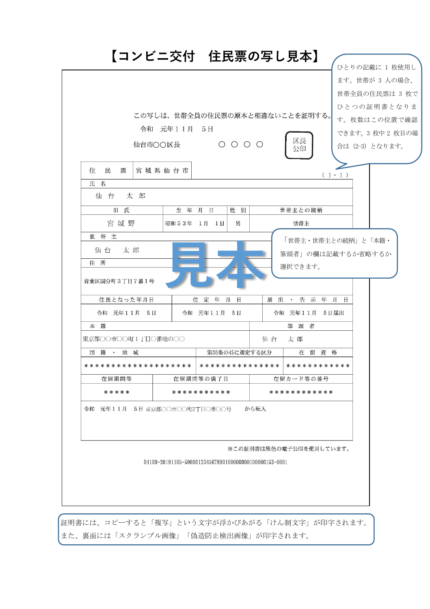

③ 取得/费用/有效期：市区町村窗口/邮送；持マイナンバーカード可コンビニ交付（便利店多功能机自助打印，6:30〜23:00）官方。费用自治体各异（例：札幌 2025年9月起窗口400円・コンビニ200円；多数自治体300円量级）官方·自治体。有效期 3か月。
④ 审查官看什么：世帯构成与続柄（与申請書家族栏对照）、国籍、在留資格・期間、住所与申报一致。
⑤ 常见错误（最高频返工点）：入管原文要求「マイナンバー省略、其他事项不得省略」，而窗口/便利店默认把続柄・世帯主等也省略——必须主动勾选"记载"。拿一张"全部省略"的住民票来，整套材料打回重取官方。コンビニ交付本就打不出含マイナンバー的住民票（多数自治体），这点反而安全官方·自治体。
① 是什么：身元保证人签署的支援承诺书。注意不是债务担保：现行様式下是"对申请人遵守法令、适当履行公的义务进行必要支援"的道义性保证实务。保证人通常须为日本に居住する日本人、永住者或特別永住者官方。
② 长什么样：
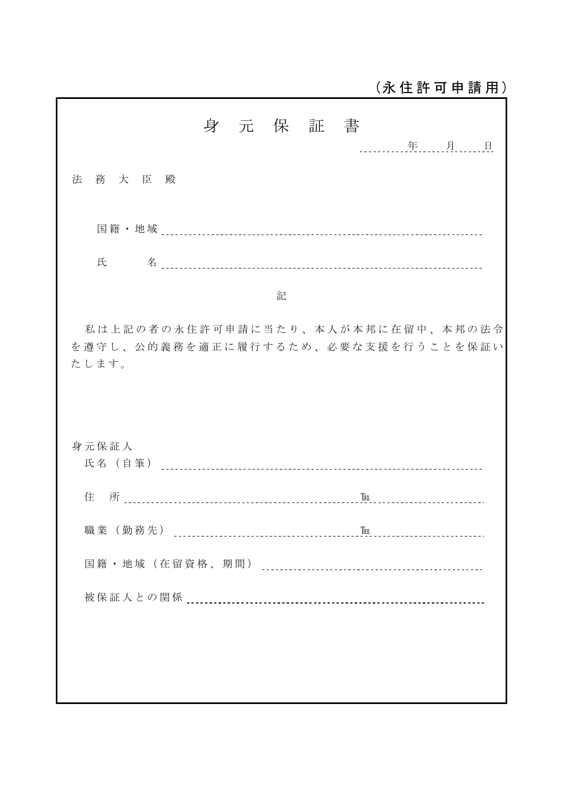
③ 取得/费用/有效期：官网下载専用様式，随附保证人身分事项书类（運転免許証写し等）即可——2022年6月1日起简化，不再需要保证人的職業証明・所得証明・住民票【实务；官方现行清单与此一致，简化公告原文待核实】。
④ 审查官看什么：保证人身份适格（日本人/永住者/特別永住者）、签署与身分证件的一致性。
⑤ 常见错误：a) 用"保证人代行服务"——被发觉直接不许可实务；b) 按过时攻略向保证人索要课税证明，平白吓退保证人（已不需要）；c) 实务仍建议找有安定定职者（有事务所给出年收300万目安——经验值，非官方线）实务。
① 是什么：护照与在留カード（中长期在留者的随身身份证）属提示件——窗口出示、不上交；无法提示时提交记载理由的文书官方。有資格外活動許可書者一并提示。
② 长什么样：
③ 取得/费用/有效期：客户现有证件，无需新办；重点是确认在留期限能覆盖审查期。
④ 审查官看什么：在留资格与期限；出入境记录映射的出国天数——"引き続き在留"是否中断（实务保守目安：连续90日/次、合计100日/年，运用口径非法定，详见第4章4.4）实务。
⑤ 常见错误：审查动辄1年以上，期间现有在留资格到期必须照常办更新——永住申请本身不产生特例期間（在留期限届满后的法定缓冲期），忘更新＝不法残留，全盘报销官方。受任后第一件事：把客户在留期限记进日历。
① 是什么：高度人材点数的计算表，按活動区分（高度専門職1号イ/ロ/ハ）选用对应工作表；技人国援用者按从事活动通常使用 1号ロ 表官方实务。
② 长什么样：
③ 取得/费用/有效期：官网免费下载。份数按情景官方：A＝申請時点1通——持「高度専門職ポイント計算結果通知書」（別記第27号の2様式）者交其写し即可替代疎明資料，无通知書者另交1年前时点计算表；B＝申請時点＋1年前時点共2通；C＝申請時点1通（能否以通知書替代疏明，官方页面未见明记待核实）；D＝申請時点＋3年前時点共2通（3年前时点原则按现行基准计算，能以当时基准立证亦可）。
④ 审查官看什么：两个时点分别 ≥80/70 点，且现行ガイドライン文言要求期间「継続して」保持点数官方（有事务所按旧口径称两时点达标即可、中途跌破不碍——与现行文言冲突⚠️，培训口径一律按全程不掉分规划，见4.2）；年收口径只认"基本給＋固定残業代＋確定済賞与"实务；年龄段上移、年龄加分缩水后过去时点是否仍够线实务。
⑤ 常见错误（自算翻车高发区）：a) 把变动残业代、未确定 bonus 算进年收实务；b) 打工/兼职经历算进职历加分（只认与现职同类实务经验）实务；c) 大学排名加分认定错误实务；d) 技人国客户只做了申请时点一张表——B/D 要两张。
① 是什么：让审查官核实计算表每项加分的证据——学历、职历、年收、日语能力、大学加分等。官方明记：只需提交到能确认合计 70/80 点以上为止，无需全项官方。
② 长什么样：
③ 取得/费用/有效期：按项目分头收集。年收实绩用課税証明書・源泉徴収票；B/D 的过去时点（1年前/3年前）要用当时的证据回溯实务。高度専門職许可时已交过的资料可用資料転用願出書转用（见 E-4）官方。
④ 审查官看什么：a) 两时点各自够线的最小证据闭环；b) 入职首年的年收换算——首年課税証明書只反映不满一年的收入，与点数表上的見込年収对不上，需附給与明細做年额换算说明实务；c) 情景A持通知書写し者本项整体可省略官方。
⑤ 常见错误：a) 全项硬收集把客户拖疲（够线即止）；b) 技人国客户回溯时点的源泉徴収票・課税証明書没留底，过去点数立证崩盘——受任时第一时间让客户找齐历年源泉徴収票实务；c) 見込年収与课税实绩的差额不主动疏明，等入管发追加通知才补。
① 是什么：证明现职的资料：会社員＝在職証明書1通；自营业＝確定申告書控え写し或法人登記事項証明書1通＋営業許可書写し（有则附）官方。 ② 长什么样：公司人事开具的任职证明，无官方样式/样图；实务字段清单：公司名・所在地・本人职位・入职年月日・职务内容（必要时含年收），加盖公司印实务。 ③ 取得/费用/有效期：公司人事/总务开具；発行后3か月内使用。 ④ 审查官看什么：现职与申請書・点数表申报一致，就労的安定性。 ⑤ 常见错误：a) 转职后立即申请——实务目安转职后等6个月、最好1年（高度専門職/高年收/博士影响较小）实务；b) 申请后转职不报——撞了解書申告义务，且申请中转职通常被负面评价实务。
① 是什么：辅助证明生计基础的资产资料：預貯金通帳写し（適宜）、不動産登記事項証明書1通等官方。 ② 长什么样：存折复印件或网银交易明细页——官方明记 Web通帳の取引履歴画面可用、不得加工官方；不动产登记证明由法務局发行（在线申请：houmukyoku.moj.go.jp）官方。 ③ 取得/费用/有效期：通帳客户自备；登記事項証明書法務局窗口/在线取得；3か月。 ④ 审查官看什么：与所得・纳税立证互为印证的生活基盘佐证。 ⑤ 常见错误：加工网银截图（官方明文禁止）；忘了通帳写し的另一用途——普通徴収期间住民税"按期缴纳"的证据（见 B-1⑤）。
① 是什么：许可时缴纳手数料的官方样式纸，贴付収入印紙 10,000円（2025年3月31日以前受理的申请适用旧额8,000円）官方。 ② 长什么样：官方様式 930002847.pdf（Excel 930002848.xlsx），无样图必要。 ③ 取得/费用/有效期：官网下载；申请时不缴，许可时才贴印纸；不许可不发生手数料官方。 ④ 审查官看什么：不涉及审查实体，程序件。 ⑤ 常见错误：把 10,000円 误解为"申请费"提前缴纳。
① 是什么：官方配套工具三件套：按情景的提出書類チェックシート（80点高専用 001422072／80点其他 001422077／70点高専用 001422078／70点其他 001422082，Excel）、就労資格用セルフチェックシート（001428363）、資料転用願出書（930003313.doc，申请转用过去已交资料）官方。 ② 长什么样：Excel/Word 文件，官网直链下载，无样图。 ③ 取得/费用/有效期：免费下载；交件时随附对应情景版本。 ④ 审查官看什么：セルフチェックシート里藏着审查口径"原话"——纳付状况一题要求"有未纳或超过当初纳期限缴纳经历的选『いいえ』"：入管把"迟缴后补上"与"未纳"同列【实务引用官方表述】。给客户做初筛时直接用这套题。 ⑤ 常见错误：四张チェックシート长得像、用错情景版本；忘附資料転用願出書，疎明資料重复收集一遍。
两个"有则附"项一句话带过：我が国への貢献に係る資料（表彰状・推薦状等，有则附，情景C/母清单明列）官方；「家族滞在」家属同时申请时另有身分関係証明書（戸籍謄本/出生・婚姻証明等）要求，属母清单项官方，家属方案设计转行政书士。
前一晚确认三件事：a) 客户现居自治体是否＝对象年度1月1日住所地（搬过家则课税・纳税证明要回原自治体开或邮送，单日计划作废）；b) 各窗口受理时间以各机关官网为准（本手册信源未覆盖具体时间）；c) 随身：在留カード等本人确认证件、マイナンバーカード（如有）、零钱（各窗口手数料合计千円量级）。
| 顺序 | 地点 | 取什么（对应节） | 费用目安 | 关键注意 |
|---|---|---|---|---|
| 第0站（在家・前夜） | ねんきんネット／e-Tax | 「各月の年金記録」打印（B-3）；その3 在线请求（B-2，电子交付370円） | 0〜370円 | 封書版定期便再交付约2か月，别等它；e-Tax 可整站省掉税務署 |
| 第1站 市区町村役所 | 世帯全員住民票（C-1）；課税＋納税証明書×年限（B-1）；国保期间者：国保納付証明書（B-4） | 各约300円/通 | 窗口明确说"マイナンバー省略、続柄・世帯主等记载"；80点线1年分／70点线3年分 | |
| 第2站 税務署（住所地管辖） | 納税証明書その3・5税目（B-2） | 书面400円×枚数（总额留余地⚠️） | 报齐5个税目名；已走 e-Tax 者跳过 | |
| 第3站 年金事務所 | 被保険者記録照会回答票（B-3） | 实务通说免费⚠️ | ねんきんネット打印已够者跳过；窗口件适合空窗期多、自缴史长的客户 |
マイナンバーカード持有客户的最短路径：住民票＋課税・納税証明走コンビニ交付（6:30〜23:00）、年金记录走ねんきんネット、その3走 e-Tax——理论上一个窗口都不用跑【官方各服务页】；没有卡的客户三站全跑，取证周期明显变长。
窗口件取齐后做三道终检：① 每张证明発行日在递交日前 3か月内；② 年金・保险件黑涂完成（基礎年金番号等）；③ 住民票只省略了マイナンバー。最后对照 E-4 对应情景的チェックシート逐项打勾，再进入递交与审查阶段（第8章）。
前面各章解决"客户够不够格"，本章解决"递出去之后会发生什么"。销售在这一段的全部工作是预期管理：等多久、中间有什么动静、为什么任何人都无法保证结果。本章数字全部来自官方统计原始文件与从业者公开实测，层级照标。
永住申请递交后的全过程，外部可观察的节点是实务：
受理（管辖的地方出入国在留管理局——出入国在留管理庁的地方执行机关，下称"地方局"——窗口或在线）→ 分配审查官·书面审查 → 必要时发「資料提出通知書」（追加资料请求）→ 结果。许可时以収入印紙（贴在文书上的印花税票）缴手数料，现行1万日元（2025年4月1日起由8,000日元上调）官方。电话照会、实地调查存在但罕见。
审查官怎么分配、决裁过几层，从业者公开资料中没有可靠记述实务——内部是黑箱，这是8.4"概率思维"的第一块拼图。
| 项目 | 实务认知实务 |
|---|---|
| 形式 | 以特定記録郵便（留投递记录的邮件）寄到自宅或公司 |
| 回复期限 | 通常2周左右，邮寄或带到入管 |
| 何时到 | 完全不定：申请刚递就来、半年后来、近10个月后才来的都有 |
| 典型追问 | 最新年度课税·纳税证明书／全家健康保险证复印件／年金记录／母国结婚证明／长期出张经纬说明／課税証明書与源泉徴収票（雇主开的年间工资·代扣税额单）金额不一致的说明 |
| 性质 | 不是不许可前兆，而是"为了能出许可给你的机会"；放置不理→高概率不许可 |
销售动作：签约时就交代客户——收到入管邮件当天转给我们，2周窗口经不起拖。
| 数字层 | 数值 | 口径 |
|---|---|---|
| 標準処理期間（官方目标值）官方 | 4–6个月 | 入管庁「永住許可申請」页面记载，非承诺 |
| 官方公表实际值官方 | 全国平均约250–338日（约8–11个月；2025年2月–2026年3月各月份） | 永住单列数字2025年2月许可分才开始公表；只统计获许可案件，不许可·取下げ（撤回）不计入；无分局数字 |
| 实务实测实务 | 东京局大致10–16个月、长则18–24个月；一所事务所实测2023年以后案件多在550日（约18个月）前后，最短139日、最长641日 | 行政书士事务所公开数据（2025年更新） |
东京以外明显更快实务：一所称大阪・名古屋・福冈大致6–10个月、申请少的地区更短；另一所实测横滨8个月–1年、大阪约8个月、名古屋约5个月（两所目安并列，不归一）。高度専門職1号ロ案件相对更快——对本公司客群有利，但没有承诺值实务。
官方与实务为什么差一倍：①官方均值只算许可案件，拖得最久后被不许可的不在内；②全国平均被快局拉低，而东京一局占全国积压约8成（下节）。对东京圈客户用"全国平均"报预期，必然失准。
許可率（＝許可÷当年处理件数"既済"，由官方统计年报表21原始文件逐年计算；当年处理含往年申请，非同批追踪率）官方：
| 年 | 全国 | 東京 | 名古屋 | 大阪 | 福岡 | 札幌 |
|---|---|---|---|---|---|---|
| 2015 | 70.9% | 67.1% | 74.5% | 74.0% | 80.2% | 90.5% |
| 2018 | 51.7% | 50.0% | 37.7% | 61.1% | 73.9% | 83.2% |
| 2021 | 57.2% | 57.3% | 50.1% | 67.6% | 58.1% | 71.6% |
| 2024 | 65.8% | 67.8% | 63.6% | 64.9% | 59.3% | 67.7% |
三个读法：
积压（年末未済＝年底未处理存量）官方：2024年全国61,013件，东京一局49,153件、占80.6%；名古屋・広島・高松同年处理≥新收，在消化存量——积压本质是"东京问题"。东京局年处理量从2021年的38,150件骤降到2023–2024年的2.5–2.6万件（约减1/3），叠加申请高位，未済两年内从1.46万冲到4.92万。骤降原因官方未公布（待核实），"人手转投其他审查业务""审查深度增加"等说法均属推测。
销售提醒：单月許可率波动极大（2025年7月单月：东京约44%〔許可1,963・不許可2,373〕、名古屋60%、大阪55%——处理批次效应），网上拿单月数字做文章的不少，引用一律用年度数实务。
三层结构：
被涂黑的恰恰是最想要的：年收门槛的具体运用数字、扶养人数的换算、年金补缴的追溯评价期间——全在不开示部分。从业者只能靠不许可案件复盘、不许可理由的口头听取、同业情报交换逆向推断实务。这是行政书士/中介信息差价值的制度根源，也是本手册大量数字只能标实务目安、标不了官方的原因。
给销售的概率思维：同条件案子结果不同，至少有四个制度性来源——①法定裁量幅度；②内部基准不可见；③基准随改订移动（第3章改订年表）；④处理批次的时点波动（上节单月数据）。对客户的正确句式是"您的硬伤是X、概率结构是Y"。任何"保证"都与制度事实相悖——不说保证不是话术谨慎，是审查制度的客观结构。
实操补充：客户本人可依「保有個人情報開示請求」（调取行政机关所存本人档案的制度）调出历次申请材料，排查前后申报矛盾——接手申请史复杂的客户时的标准动作实务。
假说【推测·实务假说】（公司CEO一线观察）：每年永住许可量近似恒定，如同出口固定的水池；所以申请人越多→许可概率越低、排队越长。下面用官方统计（出入国管理統計年報表21，2015–2024）逐条检验官方。
口径速读：新受＝当年新申请件数；既済＝当年处理完毕件数（许可＋不许可＋撤回等）；年末未済＝年底压在池中的存量；許可率＝許可÷既済（官方不公布"許可率"指标，此为本手册计算口径）。
| 年 | 新受 | 既済 | 許可 | 許可率 | 年末未済 |
|---|---|---|---|---|---|
| 2015 | 54,164 | 56,182 | 39,820 | 70.9% | 21,116 |
| 2017 | 60,024 | 50,907 | 28,942 | 56.9% | 32,772 |
| 2018 | 60,684 | 61,027 | 31,526 | 51.7% | 32,429 |
| 2021 | 61,930 | 64,149 | 36,691 | 57.2% | 22,453 |
| 2022 | 66,489 | 58,927 | 37,992 | 64.5% | 30,015 |
| 2023 | 69,336 | 50,986 | 33,470 | 65.6% | 48,364 |
| 2024 | 68,557 | 55,906 | 36,766 | 65.8% | 61,013 |
（2016・2019・2020年略，趋势无异常。）
| 假说成分 | 十年数据判定 |
|---|---|
| 每年许可量近似恒定（存在"容量"） | 基本支持：許可件数十年全落在2.9万–4.0万窄带、无上升趋势；同期新申请+28%、在留外国人从约223万增至377万（+69%）。但更平稳的是処理件数（既済：5.1万–6.4万）——瓶颈更像"审查处理能力"而非"许可名额"；是否存在名额，无任何官方文件承认或否认（待核实） |
| 申请越多→排队越长 | 强支持：年末未済从2.1万（2015）到6.1万（2024），十年2.9倍；2023、2024连续两年新收＞处理、年缺口1.27万–1.84万件；按2024年处理速度，仅消化存量就需约13个月 |
| 申请越多→許可率越低 | 部分支持：2015–2018成立（新申请+12%、許可率70.9%→51.7%）；2021–2024不成立——申请创历史新高，許可率反而回升到65.8%并走稳。更贴合数据的解释：許可率随审查基准松紧起落（2019年5月改订强化公的義務证明→2017–2021不许可高峰；其后申请端适应、不达标者被事前筛掉→回升，后半段因果为实务通说＋推断推测） |
修正版结论（销售可用）：审查处理能力近十年基本恒定在每年5–6万件，申请增量换不来处理增量，溢出全部进"蓄水池"（尤其东京），表现为审查时长从数年前的约4个月拖到如今的1–2年。所以：
背景面：2024年末在留外国人376.9万人（历史最高、年增10.5%），"永住者"以91.8万人居各在留资格第一官方——申请端长期看不到回落理由。2025年全年统计需待2026年夏季年报发布后回填（待核实）。
本章带走三句话：①对东京圈客户报"1年起步、1年半正常"，并能解释官方"4–6个月"为何不可用；②永远讲条件与概率结构，不讲保证——这是制度结构，不是谦虚；③用排队数据和2027年3月窗口制造真实紧迫感，不用"人越多越难批"这种近年数据不支持的说法。
永住三要件——素行善良・独立生計・国益適合（详见第3章）——落到实操，就是下面15种最常见的死法，每条固定四栏：①现象 ②为什么死 ③修复时间表 ④首谈怎么问。两条纪律：本章大量年限・次数是行政书士实务经验值（"目安"）而非官方明文，对客户必须如实说明性质；发现踩雷≠做不了，而是进入"先修复、再申请"的节奏。
不许可通知书理由只写1行左右；真正理由须本人到地方出入国在留管理局个室对面听取，电话不告知，机会只有一次——委托行政书士可同行，申请取次行政书士可直接向审查官听取再申请关键点。现场纪律：不抱怨不恳求，这是情报收集，不是申诉。实务
再申请策略先二分实务：
| 类型 | 特征 | 再申请时机 |
|---|---|---|
| 要件未充足型 | 年收不足、年数不足、缴纳实绩差 | 马上再申请没用，按缺口规划积累期（迟纳再攒1～2年、罚金刑等5年） |
| 书类不备/说明不足型 | 本来能过，材料或疏明拉胯 | 补强后短期再申请有望，目安3～6个月准备期 |
再申请无次数限制、无形式等待期——等待期是实质性的：把不许可原因消掉为止。实务
下表均为实务目安（⚠️=无目安项）：
| 雷 | 最短修复目安 | 核心动作 |
|---|---|---|
| 年金/国保/住民税迟纳 | 缴清＋约1年期限内实绩 | 追纳→口座振替→攒实绩 |
| 国外扶养虚报 | 修正申告＋补税；冷却期⚠️ | 摘扶养、留送金证据链 |
| 出国超标 | 在留年数清零重攒（1年/3年） | 控出行、备不得已事由疏明 |
| 转职 | 6个月～1年 | 新职稳定后再申请 |
| 年收下降 | 重攒达标年数 | 做出上升曲线 |
| 届出漏报 | 即补＋理由書说明（冷却期⚠️） | 补届出 |
| 副业未申告 | 期限后申告→缴清→攒实绩 | 税务先行 |
| 交通违章 | 轻微：直近2年干净；罚金刑：5年；免停：数年 | 时间稀释 |
| 两时点点数疏明失败 | 3～6个月（疏明不足型） | 重算两时点＋补疎明資料 |
| 理由書/材料问题 | 3～6个月 | 重写、对齐入管档案 |
销售记住一句话：客户踩雷的那天不是案子的死期，而是修复时间表的起点——首谈把15条问完，路线自然就排出来了。
前面各章是制度知识，本章把它压成销售可执行的首谈流程。目标只有一个：一次首谈采集齐判定所需事实，给出 A／B／C／D 四分类初判，然后按规则移交行政书士复核。销售的初判永远不是结论——永住是法務大臣的裁量处分（第3章），本章凡属实务经验值的"线"均标实务，对客户表述时也必须按"实务目安"定性，不得说成官方标准。
原则：只记事实，不当场下结论、不当场报"把握有多大"。
| # | 问题组 | 销售必问项 | 为什么问（链回） |
|---|---|---|---|
| 1 | 在留履历·出入境 | 现持什么在留资格？在留期間是「3年」还是「5年」？来日年月？单次最长连续出国几天、每年合计出国几天？（让客户翻护照出入境章核对） | "引き続き在留"是所有年限线的地基：实务保守线为单次90日、年合计100日，出国当日也计1天，超线在留年数有清零风险实务；在留期間「3年」视同最长在留期間的运用2027年3月31日截止（第3章） |
| 2 | 现年收·点数速算 | 现年收多少（只算基本給＋固定残業代＋確定済み賞与）？年龄？最高学历和毕业校？同职种职历几年？JLPT（日本語能力試験）N1/N2 有吗？再把1年前（或3年前）时点同样问一遍 | 定赛道用。年收不足300万円，其他项目凑满点也不被认定官方；80点/70点要求申请时点＋1年前/3年前时点双达标、期间连续保持（第4章）；把变动残业代、未确定 bonus 算进年收是最常见的自算虚高实务 |
| 3 | 税 | 扶养几人？几人在国外？有银行送金记录吗？住民税是特別徴収（公司从工资代扣代缴）还是普通徴収（自己拿缴付书缴）？普通徴収的领收证书还在吗？有副业吗、报过税吗？ | 国外扶养过多是中国籍客户重灾区：独立生計目安约300万円＋每名扶养70～80万円实务，虚挂扶养须修正申告（对已报税内容追溯更正）后才能申请实务（修复见第9章）；普通徴収要拿得出"纳期限内缴纳"的证据实务；副业所得20万円以下也要住民税申告，課税証明書与源泉徴収票金额对不上是典型追加资料项实务（概念见第2章） |
| 4 | 年金·健保 | 厚生年金还是国民年金？转职过几次、空白月自己办过国民年金加入手续吗？有没有哪怕一次迟缴？能登录ねんきんネット（年金网上记录系统）或找出ねんきん定期便（年金机构每年寄的记录通知）吗？ | 迟纳是不许可原因 No.1，1次、1天也出局实务；补缴≠合规——非当初期限内履行者原则上消极评价官方（第3章）；审查实务看直近2年记录实务 |
| 5 | 交通违章·犯罪 | 近5年吃过几张罚单？有没有赤切符（红单：酒驾·无证驾驶等刑事罚金路线）、免停？有没有其他刑事处分？ | 素行善良要件（第3章）。轻微违章实务容忍线约"5年3～5回、直近2年2回内"（各事务所目安不一）实务；罚金刑目安为缴清后5年实务 |
| 6 | 家庭构成 | 配偶者·子女各持什么在留资格？配偶者（家族滞在）每周打工几小时？年收超130万円了吗？全家都要永住吗？家人有违章或迟纳吗？ | 一损俱损：家族滞在打工超28小时/周、配偶者脱社保扶养后自缴迟纳、家人违章都波及主申请人实务；80点1年优遇只及本人官方；70点3年线不是家属吃高才优遇，而是配偶者/子女按永住者家属要件自己够格后可设计同日申请官方实务——直接决定赛道（第4章） |
| 7 | 届出义务 | 来日后搬过几次家？每次14日内办了住居地届出吗？换过工作吗？14日内向入管交了所属机关届出吗？ | 公的義務四件套之一（第3章）：14日是法定期限官方，忘交所属机关届出导致不许可的案例已开始出现实务 |
首谈纪律三条：①ねんきんネット、出入境记录当场调不出的，列入待办补交清单（宿題）限期补交；②客户口述与书面证据冲突时，以书面为准并标注矛盾点；③全程不出现"没问题""肯定能过"。现场速算用官方 Excel 参考書式（见第5章），结果只作初判。
按顺序走，命中即停。
STEP 0 硬门槛（任一命中 → 转 C 或 D）
STEP 1 点数两时点
STEP 2 公的義務·素行扫雷（点数够也要过）
STEP 3 家庭打法
输出四分类：A 80点1年线启动／B 70点3年线启动／C 先修复N个月再启动／D 风险过高、移交行政书士裁断。C、D 的对客户沟通话术不在本章（公司另行培训），销售只输出分类＋事实清单。
详细修复时间表见第9章，下表为首谈现场速查。全部为实务目安，对客户必须如此定性。
| 常见缺陷 | 修复动作 | 再启动等待期目安 |
|---|---|---|
| 年金/健保迟纳 | 缴清（追纳时效：年金2年、受免除/猶予者10年；健保2年）＋设口座振替（银行自动扣款） | 缴清后积累约1年"期限内缴纳"实绩实务（亦有1～2年口径） |
| 住民税迟纳/领收证丢失 | 补缴（可追溯5年）；与役所协商补开期限内缴纳证明；切换特別徴収或口座振替 | 同上，1～2年实绩实务 |
| 国外扶养虚挂 | 修正申告摘除扶养＋补税；此后送金一律走银行留记录 | 待核实：修正申告后的冷却期无公开目安；按"类比迟纳、规划1年实绩"操作属推测（依据：迟纳修复的同构逻辑） |
| 出国超线 | 无不得已事由的，从回日起重攒在留年数；驻在命令、亲属病危等可备疎明資料争取例外实务 | 80点线重攒1年、70点线重攒3年 |
| 刚转职 | 等新雇主处收入稳定性可被验证 | 6个月～1年实务 |
| 赤切符/免停 | 只能靠时间稀释 | 罚金缴清后约5年；免停后空开数年实务 |
| 副业未申告 | 期限后申告/修正申告＋缴清 | 再积累缴纳实绩；注意"副业未申告→不许可"是税务规则＋追加资料实务的组合推论、无直接成文案例实务，对客户须如实说明推论性质 |
必须移交行政书士的五个节点（公司SOP，非可选项）：
移交包清单（移交前销售备齐）：
移交不是甩手：行政书士复核结论与销售初判的差异点，回流到本章筛查表与判定树做迭代——判定树按不许可案例持续复盘，才能越用越准。
永住规则正处在多年来变化最密集的窗口。本章按确定度把变化切成三层——已定、审议中、传闻——然后回答客户签约前后一定会问的两个问题："拿到之后还会丢吗""要不要干脆入籍"，最后交代本手册自己的保质期。本章所有"截至今天"均指 2026-06-12。
状态标签：已公布・未施行（施行日已定为 2027-04-01）。
2024年6月14日国会通过、6月21日公布的「出入国管理及び難民認定法及び外国人の技能実習の適正な実施及び技能実習生の保護に関する法律の一部を改正する法律」（令和6年法律第60号——创设"育成就労"的那部法律，永住条款打包在内）做了两件事官方：
施行日由政令（内阁制定的实施命令）定为2027年4月1日（令和7年政令第340号，2025-10-01官報公布）实务；2026-01-23政府文件印证「令和９年４月の施行に向け…作業を実施している」官方。
官方Q&A已给出的运用框架官方：
| 问题 | 官方口径 |
|---|---|
| "故意"不缴的定义 | 明知有应缴公租公課、有支付能力而不缴 |
| 因病、失业缴不上 | 非可归责事由，「在留資格を取り消すことは想定していません」 |
| 取消＝驱逐出境？ | 否。原则上由法務大臣职权变更为「定住者」（有在留期限、需继续更新的居住类在留资格）等；仅认定"继续在留不适当"者才真正取消 |
| 为缴费去机构咨询会被通报？ | 「通報を受けることは想定していない」 |
| 特別永住者 | 不在对象内 |
截至今天没有任何官方数值标准——欠多少、滞纳几个月会触发，全部未定；要等入管庁预告策定・公表的运用ガイドライン（取消事例集），政府文件目前只写到「運用開始に向けて必要な準備を進める」官方。"2026年夏出案、秋最终决定"只是行政书士转述的报道媒体，不得对客引用。
对销售的意义：2027年4月起，"永住到手就一劳永逸"正式成为错误认识；这也是合规链（第1・2章）价值最硬的论据。
背景：2025年7月参院选前后外国人政策成为争点，内阁官房2025-07-15设立「外国人との秩序ある共生社会推進室」（外国人政策的司令塔组织）官方；高市早苗政权（2025年10月起，自民党・日本維新の会联立）2026-01-23以閣僚会議决定103页的《外国人の受入れ・秩序ある共生のための総合的対応策》，是现政权外国人政策总纲官方。按确定度分三层：
第一层：已定（已施行或法律已成立）
| 事项 | 内容 | 状态 |
|---|---|---|
| 永住ガイドライン2026-02-24改订 | 新增"现持在留资格须符合上陆许可基准"要件；"3年在留期間视同最长"的运用截止2027-03-31（拆解见第3章） | 已施行官方 |
| 手数料大涨 | 改正入管法2026-05-29成立：永住許可手数料法定上限1万円→30万円，实征方案约20万円（现行1万円官方）；预定2027-03-31前施行，金额政令未出 | 已成立・未施行媒体实务 |
| 永住者取消制度 | 见11.1 | 已公布・未施行（2027-04-01） |
| 税・社保信息联网 | 国税庁向入管庁提供未纳信息的范围已扩大官方；全部在留资格申请须附社会保险法令遵守相关文书（施行规则已改，具体省令编号与施行日待核实）；2027年3月以降入管庁经マイナンバー联网直接获取国保・国民年金缴纳与地方税课税信息官方 | 前两项已实施；第三项已公布未施行 |
| 経営・管理收紧 | 资本金3000万円等基准2025-10-16施行（非本赛道，作风向参照）官方 | 已施行 |
第二层：审议中・検討段階（官方文件写明方向，但无条文、无施行日；均出自総合的対応策官方）：①永住"審査の厳格な運用"已列为"速やかに実施"事项，并调查许可前在留资格・年数、含"特定技能→永住"流向的检讨（施策35）；②永住许可基准的独立生計要件・国益要件見直し、把"受講日本語・日本制度学习项目"设为条件——施策36，措辞是"検討する"；③取消事由范围"更なる検討"（扩大）；④帰化厳格化：审查运用上朝"原則10年以上在留"方向"検討を進める"（走法務大臣审查运用，非国籍法修法）；⑤高度人材ポイント制年收基准等見直し・加算项目整理（施策46"今後の課題"）——官方措辞是"適正化"，含审查迅速化，不能直接断言为收紧。
第三层：仅为报道传闻（对客承诺零依据）：①"永住日本語要件2027年度にも導入"——导入时间官方从未写过媒体；②"取消ガイドライン2026年夏案・秋决定"媒体；③任何"收入基准具体金额"——无官方出处；④"帰化居住要件5年→10年写入国籍法"——联立合意书中的方向性表述媒体，国会并无国籍法改正案。
以下是研判不是事实，依据均为上述三层信号。
值得盯的五个信号：①官報与e-Govパブリックコメント（政令・规则出台前的公开意见征集）上的手数料政令动静；②入管庁取消运用ガイドライン公表——"故意不缴"的事例颗粒度将首次可见；③施策36从"検討"变成法案或ガイドライン改订稿的时点（日本語・收入要件实化）；④高度人材ポイント制是否设置有識者会議（截至今天未检索到）；⑤每年1月前后閣僚会議对総合的対応策的更新。
对赛道：2026-02-24改订全面收紧的同时，70点3年／80点1年特例原样保留官方——说明高才快线短期内是政策上想留的口子；真正悬顶的是施策46的年收基准見直し：客户点数高度依赖年收项（第5章），基准若上调，边缘客户会掉线。
三档情景：
| 情景 | 假设 | 对业务 |
|---|---|---|
| 最好 | 検討长期化，日本語・收入要件2027年内不落地，点数表不动 | 变化只剩手数料与排队；1年/3年卖点完整 |
| 基准（最可能） | 2027-04-01三件套如期施行（取消制度＋5年要件化＋手数料约20万円）；日本語要件其后以ガイドライン等形式落地；高才特例保留 | 赛道成立但筛选更严、材料更重；2027-03-31前是明确窗口期 |
| 最坏 | 取消事由扩大＋点数年收基准上调＋特例本身被动（年限拉长等） | 核心卖点受损，产品逻辑需重构 |
把基准档设为最可能的依据：已成立的法律与已定政令均在轨道上，而触动高才特例的表述在官方文件中连"検討"级都未出现。
数据面的边界（官方统计官方）：2024年末全国永住申请未处理积压61,013件、东京一局占约8成；官方公表的永住平均处理期间约250–338日。"现在不申请、以后排队更长"有数据支撑；"申请人越多、許可率越低"没有近年数据支撑（2021年后申请创新高、許可率反而回升至65%以上）——后一种说法禁止使用。
永住者没有在留期间、不再有更新审查。政府文件自己点破了这个结构：「永住許可後に在留期間の更新などがないことから、許可後に永住許可要件を満たさなくなる場合があり」官方——取消制度补的就是这个洞。拿到后客户要维持的是三件事。
① 在留カード照常换发。永住没有期限，卡有期限：在留カード本身设有效期，到期须申请更换——永住者卡的具体有效年数与申请期限，本研究包未覆盖，待核实后补入。两个已定事实：2026-06-14起在留カード启用新样式，新旧两种卡均有效官方；同日起可自愿换发「特定在留カード」（在留カード与マイナンバーカード一体化，任意、非义务）官方。
② 出国不是零风险动作。短期出国走「みなし再入国許可」（出国日起1年内返日）；更长离日需事前取得「再入国許可」（最长5年）——期限与手续详见第2章2.8官方。みなし逾期未归的条文机制官方无明文（实务一致表述＝无法以原在留资格再入国⚠️），对客口径统一为"长期离日前必须先来咨询"。注意：长期离日的风险闸门在再入国制度，与11.1的取消制度（管税・社保与犯罪）是两条不同的线。
③ 税与社保义务照旧，且"被看见"的概率在上升。住民税、年金、健康保险（第2章）的缴纳义务与在留资格无关，永住后一分不少。变化在监测端：国税未纳信息向入管庁的提供已扩大官方，2027年3月以降入管庁直接联网取得缴纳・课税信息官方，2027年4月起故意不缴可触发取消程序。交付客户时固定附一句：永住之后，缴税缴保的纪律要求不降反升。
帰化＝取得日本国籍，从此不是外国人，整套入管管理（在留カード、再入国、取消制度）不再适用；永住＝保留原国籍的无期限在留资格，仍在入管体系内。
| 永住 | 帰化 | |
|---|---|---|
| 身份 | 外国籍＋无期限在留资格 | 日本国籍 |
| 在留管理 | 适用（卡・再入国・2027-04起取消制度） | 不适用 |
| 居住年限 | 原則10年；高才特例1年/3年（本手册主线） | 住所要件"5年以上"【官方·総合的対応策表述】 |
| 风向 | 11.2全部内容 | 审查运用朝"原則10年以上"方向検討中官方；"写入国籍法"仅传闻层 |
総合的対応策原文承认两者"不整合"（永住原則10年 vs 帰化住所要件5年）并因此要把帰化拉严官方。对我们的客户：1年/3年特例只存在于永住ガイドライン体系，不通用于帰化——先永住、帰化以后再议是自然顺序推测：上表年限对比。帰化牵涉国籍变更的一系列后果，超出本手册与服务范围；客户问到，记录需求、转专门窗口，不展开。
本手册 last_verified＝2026-06-12（全部research调研与素材核验同日）。维护双轨：每季度整册核验（最低限过一遍入管庁ガイドライン页、手数料页、処理期間月报、統計年報）＋政策事件触发即时更新：
| 触发事件 | 改哪里 | 盯哪里 |
|---|---|---|
| 手数料政令公布（金额・施行日） | 本章＋全册费用表述 | 官報、e-Govパブコメ |
| 取消运用ガイドライン公表 | 11.1 | 入管庁官网 |
| 永住ガイドライン再改订 | 第3・7章 | 入管庁ガイドライン页 |
| 高才点数表改正（施策46落地） | 第5・6章 | 法务省ポイント制页 |
| 2027-04-01施行节点 | 全册窗口期表述 | — |
| 2025年統計年報发布（2026年夏预定） | 统计与排队相关表述 | e-Stat |
最易过期的三处，按腐坏速度排序：
收尾一句：我们靠信息差吃饭，而信息差是会过期的资产——维护机制不是行政杂务，是产品本体。
全手册速查层：术语、材料、点数 Worksheet、时间轴、官方 URL。口径基准日 2026-06-12，向客户报数前先翻这里。
| 日文原文 | 中文释义（一句话） | 首次出现 |
|---|---|---|
| 永住者／永住許可 | 在留活动、期限均无限制的在留资格／对它的许可 | 第1章 |
| 高度専門職 | 积分制高级人才在留资格；1号（イ学术/ロ技术/ハ经营）一律5年，2号无期限 | 第1章 |
| 技術・人文知識・国際業務（技人国） | 最常见的白领工作在留资格，本手册客户主力 | 第1章 |
| 高度専門職省令 | 规定点数表的法务省令（平成26年法務省令第37号） | 第5章 |
| ポイント計算表 | 官方积分计算表（Excel 自填），申请时按时点提交 | 第1章 |
| 疎明資料 | 证明积分各项成立的证据材料，凑足70/80点即可（全册写法规则：日文材料名作「疎明資料」，中文叙述动词作「疏明」） | 第4章 |
| 高度専門職ポイント計算結果通知書 | 入管下发的积分认定结果通知（別記第27号の2様式），可替代疎明資料 | 第7章 |
| 永住許可に関するガイドライン | 入管公布的永住审查基准，现行为令和8年2月24日改订版 | 第2章 |
| 特定活動 | 法务大臣个别指定活动的在留资格；高度人材语境指旧高度人材类 | 第4章 |
| 特別高度人材（J-SKIP） | 不算积分、按学历职历＋年收2,000万/4,000万円直接认定的通道 | 第4章 |
| 住民票 | 市区町村按住民基本台帳法建立的居住记录，外国人也有 | 第2章 |
| 世帯／世帯主／続柄 | 同址共同生活单位／户代表／与户代表的关系 | 第2章 |
| マイナンバー | 12位个人编号；交入管的住民票必须省略此项、其他项不得省略 | 第2章 |
| 住民税 | 道府県民税＋市町村民税；前年所得课当年度税 | 第1章 |
| 課税（非課税）証明書 | 证明收入与算出税额的住民税证明（看收入水平） | 第1章 |
| 納税証明書（住民税） | 证明该缴的住民税缴没缴（看缴纳记录） | 第1章 |
| 納税証明書（その3） | 国税"无未纳"证明，永住申请要5税目全部 | 第2章 |
| 特別徴収／普通徴収 | 住民税公司代扣（6月〜翌5月）／自己拿纳付书缴（原则年4回） | 第2章 |
| 厚生年金 | 公司员工加入的二层年金，工资天引き、劳资折半 | 第1章 |
| 国民年金 | 20–60岁全员加入的基础年金；自营/无业者自缴 | 第2章 |
| ねんきん定期便 | 每年生日月寄送的年金记录通知；35/45/59岁为全期间封書版 | 第2章 |
| ねんきんネット | 在线年金记录服务，「各月の年金記録」打印画面入管认可 | 第2章 |
| 被保険者記録照会回答票 | 年金事務所窗口开具的缴纳记录证明 | 第2章 |
| 健康保険（社保） | 职场公共医疗保险（協会けんぽ/健保組合），劳资折半 | 第1章 |
| 国民健康保険（国保） | 无职场保险者在市区町村加入的医疗保险，全额自付 | 第2章 |
| マイナ保険証／資格確認書 | 2024-12-02 起替代纸质保险证的卡/确认书 | 第2章 |
| 在留カード | 中長期在留者的身份证件，申请时提示 | 第2章 |
| 所属機関等に関する届出 | 离职、入职等14日以内向入管届出的义务 | 第2章 |
| 住居地（変更）届出 | 定住所/搬家后14日以内在市区町村办理的届出 | 第2章 |
| 再入国許可／みなし再入国許可 | 出国超1年需事前许可／1年内回日勾选ED卡即可 | 第2章 |
| 身元保証書 | 保证人（日本人/永住者/特別永住者）签的道义性保证文书 | 第7章 |
| 了解書 | 申请人承诺审查期间发生变动时主动向入管申告的文书 | 第4章 |
| 理由書 | 申请理由说明书，形式自由，审查官最先读的叙述文书 | 第7章 |
| 在職証明書 | 勤务先开具的在职证明 | 第4章 |
| 源泉徴収票 | 雇主开具的年收与扣缴所得税证明，回溯时点年收的主证据 | 第1章 |
| 年収見込証明書 | 勤务先开具的预定年收证明，证明申请时点年收档 | 第5章 |
| 資料転用願出書 | 申请转用过去申请已提交资料的官方样式 | 第7章 |
| 提出書類チェックシート | 入管按情景发布的材料核对清单（Excel） | 第7章 |
| 収入印紙 | 缴纳手数料用的印花票，许可时贴10,000円 | 第7章 |
| 引き続き | "持续在留"要件用语，长期离日会动摇它 | 第1章 |
四种情景（80/70点 × 高度専門職/技人国援用）的共通框架。年限栏写法：80点线／70点线。日本发行的证明书一律発行后3个月内有效（入管各清单页明记官方）。
| 材料 | 取得地 | 年限・份数（80点／70点） | 费用 | 对应章节 |
|---|---|---|---|---|
| 永住許可申請書 | 官网下载（PDF/Excel） | 1通 | 免费 | 第7章 |
| 写真（縦4cm×横3cm） | 照相馆/自助机 | 1葉（16岁未满不要） | 实费 | 第7章 |
| 理由書 | 自备（形式自由，外文附日译） | 1通 | — | 第7章 |
| 住民票（世帯全員・マイナンバー省略、其他不省略） | 市区町村窗口/コンビニ交付 | 1通 | 自治体各异（例：札幌窗口400円・コンビニ200円） | 第2・7章 |
| 職業証明（在職証明書；自营=確定申告書控写し或登記事項証明書＋営業許可書写し） | 勤务先/税务资料/法務局 | 1通 | — | 第7章 |
| 住民税課税（非課税）証明書＋納税証明書 | 各年度1月1日住所地市区町村；多数可コンビニ交付 | 各1通×直近1年分／直近3年分；非特別徴収期间另附通帳写し・領収証書 | 窗口约300円/通前后、コンビニ例200–250円（自治体各异） | 第2・7章 |
| 国税納税証明書（その3）——源泉所得税及復興特別所得税・申告所得税及復興特別所得税・消費税及地方消費税・相続税・贈与税 5税目全部 | 住所地管辖税務署窗口/郵送/e-Tax | 1套 | 電子370円；書面400円/枚（⚠️5税目并记枚数因税务署实务而异，总额留余地） | 第7章 |
| 公的年金纳付证明（被保険者記録照会回答票／ねんきん定期便全期間封書版／ねんきんネット「各月の年金記録」打印／国民年金領収証書写し全部） | 年金事務所/邮寄到家/在线打印 | 直近1年間／直近2年間 | ねんきんネット免费；窗口通常免费实务 | 第2・7章 |
| 公的医療保険证明（保険証写し；2024-12-02后＝マイナポータル資格画面写し〔3个月内输出〕或資格確認書写し；国保期间＝納付証明書＋領収証書写し） | 手头证件/マイナポータル/市区町村 | 直近1年間／直近2年間 | 国保納付証明書约300円/通（自治体各异） | 第2・7章 |
| ポイント計算表 | 官网Excel自填 | 高度専門職在留者：申請時点1通；技人国援用：申請時点＋1年前/3年前时点各1通 | 免费 | 第5章 |
| ポイント疎明資料 | 学校/勤务先/考试机构等 | 凑足70/80点即止；80点高度専門職者可用結果通知書写し替代 | 各异 | 第5・7章 |
| 資産証明（預貯金通帳写し、不動産登記事項証明書） | 银行/法務局（可在线申请） | 適宜・1通 | 登記事項証明書按法務局规定 | 第7章 |
| 身元保証書＋保证人身分证件写し（運転免許証等） | 官网样式；保证人须日本人/永住者/特別永住者 | 各1通（保证人收入证明已不需要——令和4年6月简化实务） | 免费 | 第7章 |
| 了解書 | 官网（有中文简体版） | 1通 | 免费 | 第7章 |
| パスポート・在留カード | 本人持有 | 提示（非提交） | — | 第7章 |
| 手数料 | 地方出入国在留管理官署（許可时缴） | 10,000円収入印紙（令和7年4月1日起，旧8,000円） | 10,000円 | 第8章 |
三个全局规则：①年金・保险资料上的基礎年金番号、保険者番号、被保険者記号番号必须黑涂至不可复原；②提交资料原则不退还，旧资料可用資料転用願出書转用；③外文资料一律附日本語訳文。
合格线：70点，且申请时点＋1年前（80点线）/3年前（70点线）时点两个时点都要达标。前提：契約機関＋外国所属機関报酬年额合计300万円以上，不足则不认定。
| 区分 | 选项（圈选一项） | 分值 | 得分 |
|---|---|---|---|
| 学歴 | 博士30／MBA等経営管理専門職学位25／修士・専門職学位20／大学卒（短大・高専含む）10；复数领域复数学位再+5 | 0–35 | ＿＿ |
| 職歴（从事业务的实务经验） | 10年以上20／7年15／5年10／3年5／不足3年0 | 0–20 | ＿＿ |
| 年収（预定年收；含赏与，不含通勤・住宅手当、加班费） | 1,000万40／900万35／800万30／700万25／600万20／500万15／400万10（年龄越大可计档越高：35–39岁600万起、40岁以上800万起） | 0–40 | ＿＿ |
| 年齢 | 30岁未满15／30–34岁10／35–39岁5／40岁以上0 | 0–15 | ＿＿ |
| 研究実績 | 专利发明1件以上／外国政府资助研究3回以上／三大数据库论文3本以上（責任著者等），任一该当一律15 | 0/15 | ＿＿ |
| 資格 | 业务相关日本国家资格或IT告示考试・资格：2项10／1项5 | 0–10 | ＿＿ |
| 特別加算 | □イノベ促進支援措置机关就労10（中小企业合计20）□試験研究費3%超中小企业5 □外国资格・表彰5 □日本国内大学学位10 □JLPT N1（或BJT480）15／N2（或BJT400）10（与N1・国内学位不可叠加）□成長分野先端事业10 □告示对象大学卒10（与国内学位可叠加）□JICA研修修了5 □投資運用業等従事10 □地方公共団体支援措置机关就労10 | 各项如左 | ＿＿ |
| 合计 | ≥80 → 1年线；70–79 → 3年线；<70 → 不适用特例 | ＿＿ |
填完后用官方 Excel 复算一遍再下结论；客户口头报的年收按"预定年收"口径核（见第5章）。
| 时点 | 节点 | 要点 |
|---|---|---|
| 第0月 | 入职 | 雇用契約确认预定年收档；点数自查≥80并留存证据（合同、学位证明、JLPT证书）；住居地・所属機関届出14日内办妥 |
| 第0–12月 | 持续维持80点 | 住民税・年金・健康保险按期缴纳（迟缴补缴仍是减分项）；全期間特別徴収最省事；保存ねんきんネット可登录状态 |
| 第10–11月 | 取证窗口 | 集中开具：住民票、住民税課税・納税証明書（直近1年分）、国税その3（5税目）、年金/医保1年分证明——全部卡在3个月有效期内；技人国者同步做两时点ポイント計算表 |
| 第12月 | 递交 | 住居地管辖地方出入国在留管理官署窗口（平日9–12/13–16时）；身元保証書、了解書、理由書随件 |
| 递交后4–6个月 | 审查（官方標準処理期間） | 期间退职・转职・结婚离婚等重大变动须按了解書主动申告；在留期限先到期的要另行办更新 |
| 許可 | 领取 | 贴収入印紙10,000円，换「永住者」在留カード |
合计：最短约 16–18 个月（官方標準処理期間口径；实际审查时长常更长，口径区分见第8章）。实务注意：转职后立即起算申请，常因稳定性被消极评价，实务建议入职约1年后再交。
| 时点 | 节点 | 要点 |
|---|---|---|
| 第0月 | 入职 | 点数自查≥70（含300万円最低年收基準）；届出义务办妥；3年前时点的证据从现在开始留（源泉徴収票、合同每年归档） |
| 第0–36月 | 持续维持70点 | 3个年度的住民税记录都会被看（N年收入→N+1年度课税，证明书要回各年度1月1日住所地的自治体开）；年金・医保按期缴满直近2年间；每年JLPT/学历等加分证据不过期 |
| 第34–35月 | 取证窗口 | 住民税課税・納税証明書直近3年分、国税その3、年金/医保2年分证明、住民票；技人国者做申請時点＋3年前时点两份ポイント計算表（3年前时点可按当时基准立证） |
| 第36月 | 递交 | 同D-1 |
| 递交后4–6个月 | 审查 | 同D-1 |
合计：最短约 40–42 个月。70点线的胜负手在"3年不断档"：换工作空档的国保・国民年金・普通徴収三连段，每一段都要自证按期缴纳。
制度依据
必要书类页（按客户情景选）
样式下载
客户取证工具
待核实备忘：①国税その3 五税目的发行枚数与总费用（书面400円/枚，是否并记1枚因税务署而异）；②被保険者記録照会回答票窗口手数料（实务通说免费，官方未明示）；③各自治体证明书手数料仅核实江東区・札幌市・相模原市等数例，报价前让客户查自己自治体官网。